01 架构的演进
传统单体应用架构
十多年前主流的应用架构都是单体应用，部署形式就是一台服务器加一个数据库，在这种架构下，运维人员会小心翼翼地维护这台服务器，以保证服务的可用性。
▲ 单体架构
单体应用架构面临的问题
随着业务的增长，这种最简单的单体应用架构很快就面临两个问题。首先，这里只有一台服务器，如果这台服务器出现故障，例如硬件损坏，那么整个服务就会不可用；其次，业务量变大之后，一台服务器的资源很快会无法承载所有流量。
解决这两个问题最直接的方法就是在流量入口加一个负载均衡器，使单体应用同时部署到多台服务器上，这样服务器的单点问题就解决了，与此同时，这个单体应用也具备了水平伸缩的能力。
▲ 单体架构（水平伸缩）
微服务架构
1. 微服务架构演进出通用服务
随着业务的进一步增长，更多的研发人员加入到团队中，共同在单体应用上开发特性。由于单体应用内的代码没有明确的物理边界，大家很快就会遇到各种冲突，需要人工协调，以及大量的 conflict merge 操作，研发效率直线下降。
因此大家开始把单体应用拆分成一个个可以独立开发、独立测试、独立部署的微服务应用，服务和服务之间通过 API 通讯，如 HTTP、GRPC 或者 DUBBO。基于领域驱动设计中 Bounded Context 拆分的微服务架构能够大幅提升中大型团队的研发效率。
2. 微服务架构给运维带来挑战
应用从单体架构演进到微服务架构，从物理的角度看，分布式就成了默认选项，这时应用架构师就不得不面对分布式带来的新挑战。在这个过程中，大家都会开始使用一些分布式服务和框架，例如缓存服务 Redis，配置服务 ACM，状态协调服务 ZooKeeper，消息服务 Kafka，还有通讯框架如 GRPC 或者 DUBBO，以及分布式追踪系统等。
除分布式环境带来的挑战之外，微服务架构给运维也带来新挑战。研发人员原来只需要运维一个应用，现在可能需要运维十个甚至更多的应用，这意味着安全 patch 升级、容量评估、故障诊断等事务的工作量呈现成倍增长，这时，应用分发标准、生命周期标准、观测标准、自动化弹性等能力的重要性也更加凸显。
▲ 微服务架构
云原生
1. 基于云产品架构
一个架构是否是云原生，就看这个架构是否是长在云上的，这是对“云原生”的简单理解。这个“长在云上”不是简单地说用云的 IaaS 层服务，比如简单的 ECS、OSS 这些基本的计算存储；而是应该理解成有没有使用云上的分布式服务，比如 Redis、Kafka 等，这些才是直接影响到业务架构的服务。微服务架构下，分布式服务是必要的，原来大家都是自己研发这样的服务，或者基于开源版本自己运维这样的服务。而到了云原生时代，业务则可以直接使用云服务。
另外两个不得不提的技术就是 Docker 和 Kubenetes，其中，前者标准化了应用分发的标准，不论是 Spring Boot 写的应用，还是 NodeJS 写的应用，都以镜像的方式分发；而后者在前者的技术上又定义了应用生命周期的标准，一个应用从启动到上线，到健康检查，再到下线，都有了统一的标准。
2. 应用生命周期托管
有了应用分发的标准和生命周期的标准，云就能提供标准化的应用托管服务。包括应用的版本管理、发布、上线后的观测、自愈等。例如对于无状态的应用来说，一个底层物理节点的故障根本不会影响到研发，因为应用托管服务基于标准化应用生命周期可以自动完成腾挪工作，在故障物理节点上将应用的容器下线，在新的物理节点上启动同等数量的应用容器。可以看出，云原生进一步释放了价值红利。
在此基础上，由于应用托管服务能够感知到应用运行期的数据，例如业务流量的并发、cpu load、内存占用等，业务就可以配置基于这些指标的伸缩规则，再由平台执行这些规则，根据业务流量的实际情况增加或者减少容器数量，这就是最基本的 auto scaling——自动伸缩。这能够帮助用户避免在业务低峰期限制资源，节省成本，提升运维效率。
本文总结
在架构的演进过程中，研发运维人员逐渐把关注点从机器上移走，希望更多地由平台系统管理机器，而不是由人去管理，这就是一个对 Serverless 的朴素理解。
作者简介
许晓斌，阿里云高级技术专家。目前负责阿里集团 Serverless 研发运维平台建设，在这之前负责 AliExpress 微服务架构、Spring Boot 框架、研发效率提升工作。《 Maven 实战》作者，曾经是 Maven 中央仓库的维护者。
02 Serverless 的价值
回顾架构的演进过程，我们不难发现，研发运维人员正在逐渐地把关注点从机器上移走，不再去管理机器。
其实我们都知道，虽然说是 Serverless，但 Server（服务器）是不可能真正消失的，Serverless 里这个 less 更确切地说，应该是开发者不用关心服务器的意思。这就好比现代编程语言 Java 和 Python，开发不用手工分配和释放内存，但内存依然在哪里，只不过交给垃圾收集器管理了。称一个能帮助你管理服务器的平台为 Serverless 平台，就好比称呼 Java 和 Python 为 Memoryless 语言一样。
但是，如果我们把目光放到今天这个云的时代，那么就不能狭义地把 Serverless 仅仅理解为不用关心服务器。云上的资源除了服务器所包含的基础计算、网络、存储资源之外，还包括各种类别的更上层的资源，例如数据库、缓存、消息等。
Serverless 的愿景
2019 年 2 月，UC 伯克利大学发表了一篇标题为《Cloud Programming Simplified: A Berkeley View on Serverless Computing》的论文，论文中也有一个非常清晰形象的比喻，文中这样描述：
在云的上下文中，Serverful 的计算就像使用低级的汇编语言编程，而 Serverless 的计算就像使用 Python 这样的高级语言进行编程。例如 c = a + b 这样简单的表达式，如果用汇编描述，就必须先选择几个寄存器，把值加载到寄存器，进行数学计算，再存储结果。这就好比今天在云环境下 Serverful 的计算，开发首先需要分配或找到可用的资源，然后加载代码和数据，再执行计算，将计算的结果存储起来，最后还需要管理资源的释放。
论文中所谓的 Serverful 计算，是我们今天主流的使用云的方式，但不应该是未来我们使用云的方式。我认为 Serverless 的愿景应该是 Write locally, compile to the cloud，即代码只关心业务逻辑，由工具和云去管理资源。
Serverless 的价值
在对 Serverless 有一个总体的抽象概念之后，也需要具体了解 Serverless 平台的主要特点，同时这些特点也是 Serverless 核心优势的体现。
1. 不用关心服务器
管理一两台服务器可能不是什么麻烦的事情，管理数千甚至数万台服务器就没那么简单了。任何一台服务器都可能出现故障，如何自动识别故障，摘除有问题的实例，这是 Serverless 平台必须具备的能力；此外，操作系统的安全补丁升级，需要做到不影响业务，自动完成；日志和监控系统需要默认打通；系统的安全策略需要自动配置好以避免风险；当资源不够时，需要能够自动分配资源并安装相关的代码和配置，等等。
2. 自动弹性
今天的互联网应用都被设计成可伸缩架构，当业务有比较明显的高峰和低谷时，或者业务有临时的容量需求时（比如营销活动），Serverless 平台都能够及时且稳定地实现自动弹性。为了实现这个能力，平台需要有非常强大的资源调度能力，以及对应用各项指标（如 load、并发）非常敏锐的感知能力。
3. 按实际资源使用计费
Serverful 的方式使用云资源，是按占用而非使用计费的，例如用户在云上购买了三台 ECS，那么不管用户实际使用了这三台 ECS 多少的 CPU 和内存，他都需要支付这三台 ECS 整体的费用。而在 Serverless 模式下，用户是按实际使用的资源付费的，例如一个请求实际使用了一台 1core2g 规格资源 100ms 的时间，那么用户就只需要为该规格的单价乘以时间（即100ms）付费。类似的，用户如果用的是 Serverless 数据库，那么就只需要为 query 实际消耗的资源，以及数据存储的资源付费。
4. 更少的代码，更快的交付速度
基于 Serverless 架构的代码通常会重度使用后端的服务，将数据、状态管理等内容从代码中分离出去；此外，更彻底的 FaaS 架构则把代码的 Runtime 也交给了平台管理。这就意味着，同样的应用，Serverless 模式下的代码相比 Serverful 模式会少很多，因此不论是从分发还是启动，都会更快。Serverless 平台也通常能够提供非常成熟的代码构建发布、版本切换等特性，提升交付速度。
03 常见 Serverless 架构模式
究竟什么是 Serverless 架构？
什么是 Serverless 架构？按照 CNCF 对 Serverless 计算的定义，Serverless 架构应该是采用 FaaS（函数即服务）和 BaaS（后端服务）服务来解决问题的一种设计。这个定义让我们对 Serverless 的理解稍显清晰，同时可能也造成了一些困扰和争论。
- 随着需求和技术的发展，业界出现了一些 FaaS 以外的其它形态的 Serverless 计算服务，比如 Google Cloud Run，阿里云推出的面向应用的 Serverless 应用引擎服务以及 Serverless K8s，这些服务也提供了弹性伸缩能力和按使用计费的收费模式，具备 Serverless 服务的形态，可以说进一步扩大了 Serverless 计算的阵营；
- 为了消除冷启动影响，FaaS 类服务如阿里云的函数计算和 AWS 的 Lambda 相继推出了预留功能，变得不那么“按使用付费”了；
- 一些基于服务器（Serverful）的后端服务也推出了 Serverless 形态产品，比如 AWS Serverless Aurora，阿里云 Serverless HBase 服务。
这样看来，Serverless 的界线是有些模糊的，诸多云服务都向着 Serverless 方向演进。一个模糊的东西如何指导我们解决业务问题呢？Serverless 有一个根本的理念是一直没有改变的，即让用户最大化地专注业务逻辑，其它的特征如不关心服务器、自动弹性、按使用计费等，都是为了实现这个理念而服务。
著名的 Serverless 实践者 Ben Kehoe 这样描述 Serverless 原生心智，当我们在业务中考虑做什么时可以体会一下这种心智：
- 我的业务是什么？
- 做这件事情能不能让我的业务出类拔萃？
- 如果不能，我为什么要做这件事情而不是让别人来解决这个问题？
- 在解决业务问题之前没有必要解决技术问题。
在实践 Serverless 架构时，最重要的心智不是选择哪些流行服务和技术，攻克哪些技术难题，而是时刻将专注业务逻辑铭记在心，这样更容易让我们选择合适的技术和服务，明确如何设计应用架构。人的精力是有限的，组织的资源是有限的，Serverless 的理念可以让我们更好地用有限的资源解决真正需要解决的问题，正是因为我们少做了一些事情，转而让别人做这些事情，我们才可以在业务上做的更多。
接下来我们介绍一些常见的场景，并探讨如何使用 Serverless 架构支持这些场景。我们主要会采用计算、存储和消息通信等技术来设计架构，从可运维性、安全性、可靠性、可扩展性、成本几个角度来衡量架构的优劣。为了让这种讨论不过于抽象，我们会用一些具体的服务作为参考，但是这些架构的思想是通用的，可以用其它类似产品实现。
场景 1: 静态 Web 站点

假如我们要做一个信息展示的网站，需求很简单，就像早年的中国黄页那样，信息更新很少，大概有以下几种主要选择：
- 买台服务器放在 IDC 机房里托管，运行站点；
- 去云厂商上买台云服务器运行站点，为了解决高可用的问题又买了负载均衡服务和多个服务器；
- 采用静态站点方式，直接由对象存储服务（如 OSS）支持，并使用 CDN 回源 OSS。

这三种方式由云下到云上，由管理服务器到无需管理服务器，即 Serverless。这一系列的转变给使用者带来了什么变化呢？前两种方案需要预算，需要扩展，需要实现高可用，需要自行监控等，这些都不是马老师当年想要的，他只想去展示信息，让世界了解中国，这是他的业务逻辑。Serverless 正是这样一种理念，最大化地让人去专注业务逻辑。第三种方式就是采用了 Serverless 架构去构建一个静态站点，它有其它方案无法比拟的优势，比如：
- 可运维性：无需管理服务器，比如操作系统的安全补丁升级、故障升级、高可用性，这些云服务（OSS，CDN）都帮着做了；
- 可扩展性：无需对资源做预估和考虑未来的扩展，因为 OSS 本身是弹性的，使用 CDN 使得系统延迟更小、费用更低、可用性更高；
- 成本：按实际使用的资源付费，包括存储费用和请求费用，没有请求时不收取请求费用；
- 安全性：这样一个系统甚至看不到服务器，不需要通过 SSH 登录，DDoS 攻击也交给云服务来解决。
场景 2: 单体和微服务应用

静态页面和站点适合用于内容少、更新频率低的场景，反之，就需要动态站点了。比如淘宝的商品页面，采用静态页面方式管理商品信息是不现实的。如何根据用户请求动态地返回结果呢？我们来看两种常见的解决方案：
- Web 单体应用：所有的应用逻辑都在一个应用中完成，结合数据库，这种分层架构可以快速实现一些复杂度较低的应用；
- 微服务应用：随着业务发展，功能多了，访问量高了，团队大了，这时候一般就需要将单体应用中的逻辑拆分成多个执行单元，比如商品页面上的评论信息、售卖信息、配送信息等，都可以对应一个单独的微服务。这种架构的好处是每个单元是高度自治的，易于开发（比如使用不同技术）、部署和扩展。但是这种架构也引入了分布式系统的一些问题，如服务间通信的负载均衡、失败处理等。
处在不同阶段不同规模的组织可以选择适合自身的方式，来解决它面临的首要业务问题，淘宝最初被人们接受一定不是因为它使用了哪种技术架构。但是无论选择哪种架构，上面提到的 Serverless 原生心智都有助于我们专注业务。比如：
- 是否需要自己购置服务器安装数据库，实现高可用、管理备份、升级版本等，还是可以把这些事情交给托管的服务如 RDS；是否可以使用表格存储、Serverless HBase 等 Serverless 数据库服务，实现按使用的弹性扩容缩容和付费；
- 单体应用是需要自己购置服务器运行，还是可以交给托管服务，如函数计算和 Serverless 应用引擎；
- 是否可以通过函数来实现轻量级微服务，依赖函数计算提供的负载均衡、自动伸缩、按需付费、日志采集、系统监控等能力；
- 基于 Spring Cloud、Dubbo、HSF 等实现的微服务应用是否需要自己购置服务器部署应用，管理服务发现，负载均衡，弹性伸缩，熔断，系统监控等，还是可以将这些工作交给诸如 Serverless 应用引擎服务。
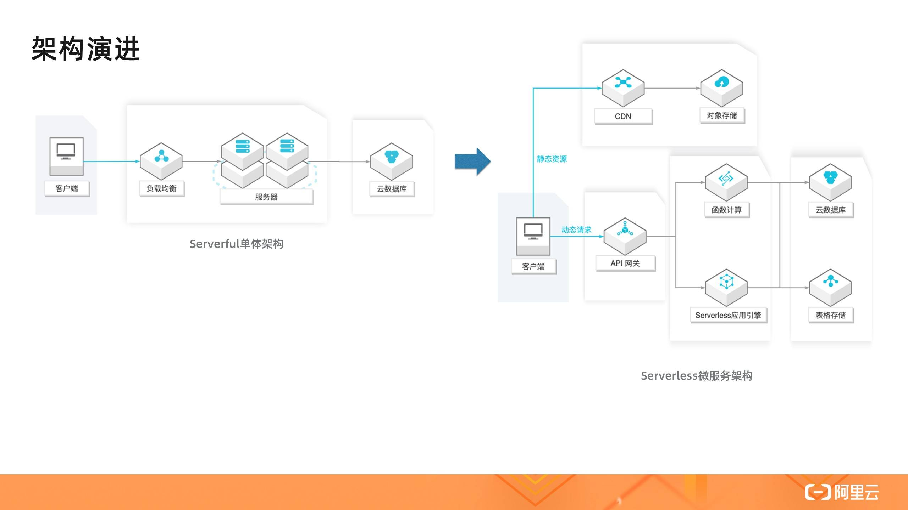
上图右侧的架构引入了 API 网关、函数计算或者 Serverless 应用引擎来实现计算层，将大量的工作交给了云服务完成，让用户最大程度上专注实现业务逻辑。其中系统内部多个微服务的交互如下图所示，通过提供一个商品聚合服务，将内部的多个微服务统一呈现给外部。这里的微服务可以通过 SAE 或者函数实现。

这样的架构还可以继续扩展，比如如何支持不同客户端的访问，如上图右侧所示。现实中这种需求是常见的，不同的客户端需要的信息可能是不同的，手机可以根据位置信息做相关推荐。如何让手机客户端和不同浏览器都能受益于 Serverless 架构呢？这又牵扯出了另一个词——Backend for fronted（BFF），即为前端定做的后端，这受到了前端开发工程师的推崇，Serverless 技术让这个架构广泛流行，因为前端工程师可以从业务角度出发直接编写 BFF，而无需管理服务器相关的令前端工程师更加头疼的事情。更多实践可以参见：基于函数计算的 BFF 架构。
场景 3: 事件触发
前面提到的动态页面生成是同步请求完成的，还有一类常见场景，其中请求处理通常需要较长时间或者较多资源，比如用户评论中的图片和视频内容管理，涉及到如何上传图片和处理图片（缩略图、水印、审核等）及视频，以适应不同客户端的播放需求。

如何对上传多媒体文件实时处理呢？这个场景的技术架构大体经历了以下演变：

- 基于服务器的单体架构：多媒体文件被上传到服务器，由服务器处理，对多媒体的显示请求也由服务器完成；
- 基于服务器的微服务架构：多媒体文件被上传到服务器，服务器处理转存到 OSS，然后将文件地址加入消息队列，由另一组服务器处理文件，将处理结果保存到 OSS，对多媒体的显示请求由 OSS 和 CDN 完成；
- Serverless 架构：多媒体直接上传到 OSS，由 OSS 的事件触发能力直接触发函数，函数处理结果保存到 OSS，对多媒体的显示请求由 OSS 和 CDN 完成。
基于服务器的单体架构面临以下问题：
- 如何处理海量文件？单台服务器空间有限，购买更多的服务器；
- 如何扩展 Web 应用服务器？Web 应用服务器是否适合 CPU 密集型任务？
- 如何解决上传请求的高可用？
- 如果解决显示请求的高可用？
- 如何应对请求负载的波峰波谷？
基于服务器的微服务架构很好地解决了上述的大部分问题，但是仍然面临一些问题：
- 管理应用服务器的高可用性和弹性；
- 管理文件处理服务器的弹性；
- 管理消息队列的弹性。
而第三种 Serverless 架构很好地解决了上述所有问题。开发人员原来需要做的负载均衡、服务器的高可用和弹性伸缩、消息队列都转移到了服务内部。我们可以看到随着架构的演进，开发人员做的事情越来越少，系统更加成熟，业务上更加聚焦，大大提升了交付速度。
这里的 Serverless 架构主要体现的价值是：
- 事件触发能力：函数计算服务与事件源（OSS）的原生集成让使用者无需管理队列资源，队列自动扩展，实时处理上传的多媒体文件；
- 高弹性和按需付费：图片和视频（不同大小的视频）需要的计算资源规格是不同的，流量的波峰波谷对资源的需求是不同的，现在这种弹性由服务提供，按照用户的真实使用去扩容缩容，让用户 100% 地利用资源，无需为闲置资源付费。
事件触发能力是 FaaS 服务的一个重要特性，这种 Pub-Sub 事件驱动模式不是一个新的概念，但是在 Serverless 流行之前，事件的生产者、消费者以及中间的连接枢纽都是用户负责的，就像前面架构演进中的第二个架构。
Serverless 让生产者发送事件，维护连接枢纽都从用户职责中省略了，而只需关注消费者的逻辑，这就是 Serverless 的价值所在。
函数计算服务还集成其它云服务事件源，让你更方便地在业务中使用一些常见的模式，如 Pub/Sub、事件流模式、Event Sourcing 模式。关于更多的函数组合模式可以参见：函数组合的 N 种方式。

场景 4: 服务编排
前面的商品页面虽然复杂，但是所有的操作都是读操作，聚合服务 API 是无状态、同步的。我们来看一下电商中的一个核心场景——订单流程。

这个场景涉及到多个分布式写的问题，这是引入微服务架构导致的最麻烦的一个问题。单体应用在一定程度上可以比较容易地处理这个流程，因为使用了一个数据库，可以通过数据库事务保持数据一致性。但是现实中可能不得不去跟一些外部服务打交道，需要一定的机制保证流程的前进和回退顺利完成，解决这个问题的一个经典模式是 Saga 模式，而实现这种模式有两种不同架构：
一种做法是采用事件驱动模式，驱动流程完成。在这个架构里，有一个消息总线，感兴趣的服务如库存服务监听事件，监听者可以使用服务器或者函数。借助于函数计算和消息主题的集成，这个架构也可以完全不使用服务器。
这个架构模块是松耦合的，职责清晰。不足之处是随着流程变得更长更加复杂，这个系统变得难以维护。比如很难直观地了解业务逻辑，执行时的状态也不宜跟踪，可运维性比较差。

另外一种架构是基于工作流的 Saga 模式。在这个架构里，各个服务之间是独立的，也不通过事件传递信息，而是有一个集中的协调者服务来调度单个业务服务，业务逻辑和状态由集中协调者维护。而实现这个集中的协调者通常面临以下问题：
- 编写大量代码来实现编排逻辑、状态维护和错误重试等功能，而这些实现又很难被其它应用重用；
- 维护运行编排应用的基础设施，以确保编排应用的高可用性和可伸缩性；
- 考虑状态持久性，以支持多步骤长时间运行流程并确保流程的事务性。
依赖于云服务，比如阿里云的 Serverless 工作流服务，这些事情都可以交给平台来做，用户又回到了只需关注业务逻辑的状态。>
下图右侧是流程定义，我们可以看到这实现了前面基于事件的 Saga 模式的效果，并且流程大大简化，提升了可观测性。

场景 5: 数据流水线
随着业务的进一步发展，数据变得越来越多，这时候就可以挖掘数据的价值。比如，分析用户对网站的使用行为并做相应的推荐。一个数据流水线包括数据采集、处理、分析等多个环节。这样的服务如果从头搭建虽然是可行的，但是也是复杂的，我们这里讨论的业务是电商，而不是去提供一个数据流水线服务。有了这样一个目标，我们做选择时就会变得简单明确。
- 日志服务（SLS）提供了数据采集、分析和投递功能；
- 函数计算（FC）可以对日志服务的数据进行实时处理，将结果写入其它服务，如日志服务、OSS；
- Serverless 工作流服务可以定时批量处理数据，通过函数定义灵活的数据处理逻辑，构建 ETL 作业；
- 数据湖分析（DLA）提供了 Serverless 化的交互式查询服务，它使用标准 SQL 分析对象存储(OSS)、数据库（PostgreSQL / MySQL 等）、NoSQL（TableStore 等）等多个数据源的数据。
总结
限于篇幅，我们只讨论了 Serverless 架构在几个场景中的应用，但是在实践中我们可以看出一种共性，即如何将业务逻辑中与业务不相关的工作剥离出去，交给平台和服务完成。这种各司其职、分工协作的做法在其它场合并不陌生，但是 Serverless 的思想让这种形态更为明确。Less is more，少的不只是 Server 和围绕 Server 相关的负担，还可以是业务以外的方方面面，多的是专注的业务和产品的核心竞争力。
04 Serverless 技术选型
今天来讲，在 Serverless 这个大领域中，不只有函数计算这一种产品形态和应用类型，而是面向不同的用户群体和使用习惯，都有其各自适用的 Serverless 产品。例如面向函数的函数计算、面向应用的 Serverless 应用引擎、面向容器的 Serverless Kubernetes，用户可以根据自己的使用习惯、使用场景或者应用类型，去选择使用什么样的 Serverless 产品。下面通过本文给大家介绍一下，阿里云都有哪些可供大家选择的 Serverless 产品。
Serverless 产品及分层
众所周知，最早提出 Serverless 的是 AWS，其在 Serverless 领域的旗舰产品是 function compute。同样阿里云也有函数计算的产品，帮助用户构建 Serverless 函数。但 Serverless 不仅仅是函数，如下图所示，其实用户会期望在应用、容器等层面也能够享受到 Serverless 的好处，包括按量付费、极致弹性等，这样也更符合用户原有的使用习惯。

在上图中，大家能够看到，阿里云针对函数、应用和容器都推出了对应的 Serverless 产品，用户可以针对自己的使用场景选择不同的产品。
函数计算
1. 函数计算介绍
上图展示了函数计算的使用方式。从用户角度，他需要做的只是编码，然后把代码上传到函数计算中。这个时候还不会产生费用，只有到被调用的时候才有费用。调用的方式可以是产品提供的 API/SDK，也可以通过一些事件源，比如阿里云的 OSS 的事件。比如用户往 OSS 里的某一个 bucket 上传了一个文件，希望这个文件被自动处理；比如上传一个 zip 包，希望能够自动解压到另外一个 bucket，这都是很典型的函数场景。
另外，函数计算能够提供非常好的弹性能力，最终的费用是根据时长和内存数进行计费的，如果调用量小的话，只会有很少的费用。并且它在语言方面也非常丰富，常用的 nodejs、php、python、java 都直接支持。同时提供自定义的运行环境，可以支持任意的可执行的语言。
2. 函数计算典型场景
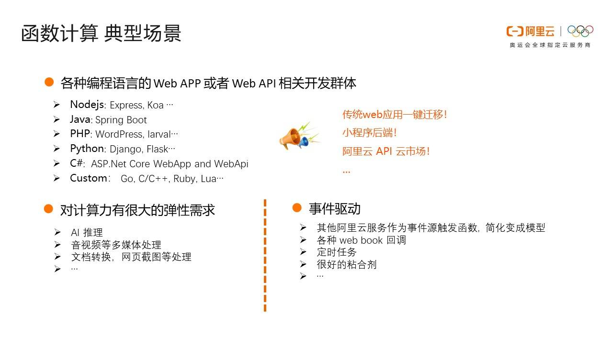
从使用场景来说，主要有三类：
- Web 应用。可以是各种语言写的，这种可以使用 Serverless 框架新编写的程序，也可以是已有的应用。比如小程序后端、或者发布到 API 市场的 API 后端应用等。
- 对计算能力有很强的弹性诉求的应用。比如 AI 推理、音视频处理、文档转换等。
- 事件驱动型的应用。比如通过其他阿里云产品驱动的场景、Web Hook、定时任务等。函数计算已经与很多产品进行了打通，比如对象存储、表格存储、定时器、CDN、日志服务、云监控等，可以非常快速地组装出一些业务逻辑。
3. 函数计算核心竞争力
函数计算对客户的一个最大的价值，就是能够让用户只关注自己的业务逻辑开发，完全不需要管理运维，诸如计算资源、网络设置等都不需要关心。在隔离性上提供 vm 级别的隔离，保证用户在运行时的数据安全、运行时安全等；在可用性方面默认提供 3az 的高可用架构，保证客户默认就是高可用的最佳实践架构；在弹性方面，可以做到毫秒级的弹性效率，满足客户突发的流量冲击；在计费方面也非常灵活，真正按照用户的请求情况进行收费，也支持对 long run 的应用更友好的预付费模式。
Serverless 应用引擎
1. SAE 概述

SAE 是业内首款面向应用的 Serverless Paas 平台。这个产品以面向应用的视角，帮助用户在不做任何修改的前提下把存量应用上到云端。在资源层，用户不再需要自己管理和运维机器及集群，只需要关注自己应用所需要使用的规格以及实例数，不再需要关心底层是虚机还是容器。
SAE 从资源层面提供计算资源、弹性、隔离性等能力，让用户只需要关注自己的应用。在应用层，SAE 提供了监控、日志、微服务治理等能力，帮助用户解决应用可观测性和治理需求。同时提供网络配置、流量控制能力，提供了和 CICD 良好的集成，用户可以使用已有 CICD 部署到 SAE，比如 jenkins、云效等，可以说覆盖了应用上云的完整场景。
2. SAE 典型场景
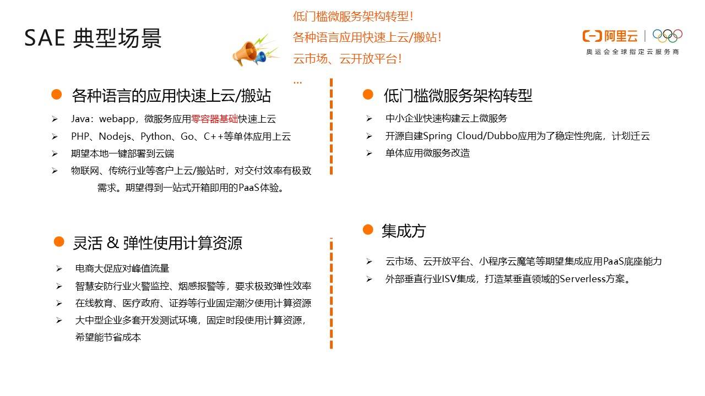
SAE 有几个典型的使用场景，一个是存量业务上云，特别是微服务、java 应用，同时也支持其他语言的单体应用，都能够通过 SAE 这个平台运行在阿里云上，并且不需要做任何代码的修改。在行业方面，SAE 特别适合有比较大的流量波动的在线业务，比如电商大促、在线教育等行业的场景。另外 SAE 作为应用平台也可以被上层的行业 Saas 所集成，帮助用户更快地构建行业 Saas。
3. SAE 特性
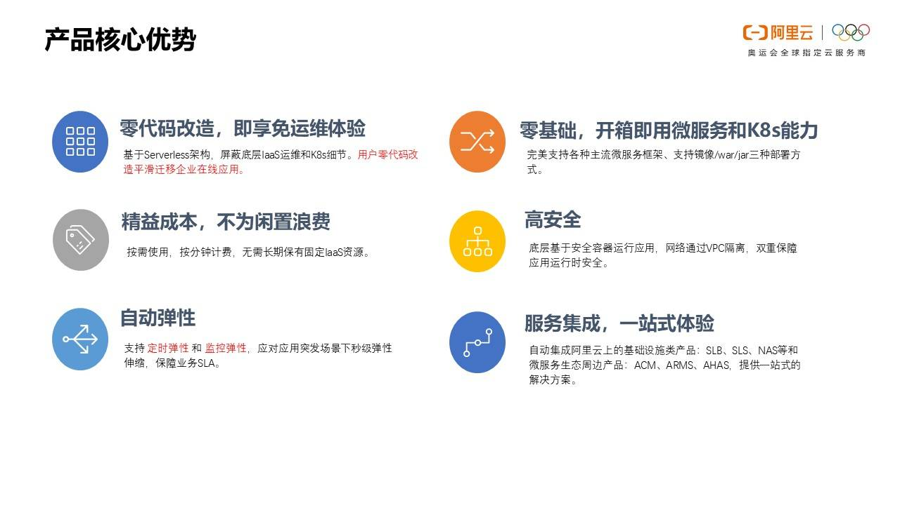
通过上面的场景介绍，我们可以看到 SAE 除了 Serverless 体验本身所带来的极致弹性、免运维等特性之外，重点在应用层给用户提供全栈的能力，包括对微服务的增强支持，以及整合了和应用息息相关的能力，包括配置、监控、日志、流量控制等。再加上用户零代码的改动，是企业在线业务平滑上云非常好的选择。
Serverless Kubernetes
1. ASK 概述
另一个阿里云提供的 Serverless 产品是 Serverless K8s。但是 K8s 怎么还能 Serverless 呢？这就需要先了解一下技术架构的演进历程。
最早的时候大家都把 Docker 镜像部署在虚机里，用户需要购买 ECS，然后部署镜像，最后是网络的一些配置，比如 SLB、EIP 等。在这个过程中，用户需要自己完成部署动作，扩容需要自己重复上面的动作，或者自己构建一套自动化脚本，相对来说成本和稳定性都比较低。
之后有了 K8s 来帮大家解决容器编排的问题。这种标准化的方式确实大大提高了大家的生产力。用户通过使用 deployment、service 等标准的 K8s 的方式进行编排，并进行部署。但 K8s 的运维和管理还是相对比较复杂的，技能要求比较高，用户需要运维 ECS 以及通过 ECS 构建出来的 K8s。另外一个痛点时 K8s 集群里的 ECS 是需要预先购买的，如果客户的负载有比较大的波动，就会出现比较多的资源浪费。虽然技术上也有解决方案，比如 worker node 的弹性，但这对于初级用户来说，还是有比较高的复杂度。
那有没有一种方案可以让用户既能享受到 K8s 提供的容器编排能力，又能够不需要关心 ECS 和 K8s 的运维、管理和弹性问题呢？这就是 Serverless K8s 的方案。对应到阿里云的产品就是 ASK。在 ASK 的方案里，用户创建一个 ASK 集群，但不需要指定任何 ECS 节点，然后通过标准的 K8s 容器编排、deployment 等部署镜像。ASK 会根据用户的负载需求，自动在底层资源池构建需要的 POD 并进行弹性伸缩，用户不再需要关心容量规划、ECS 机器运维、资源限制等 LaaS 层的问题，非常便利。
2. ASK 典型场景

那 ASK 主要用在哪些场景里呢？首先可以用来跑在线业务，部署模式灵活，可以是 deployment、helm chart 等所有的 K8s 原生模式，特别是能够很好地应对突发流量，极致弹性，可以在 30 秒完成 500 个容器实例的弹性。这样的弹性效率，可以很好地支撑大数据计算类的任务，比如 Spark、Presto 等，也可以在需要的时候即时获取资源，支撑 10000 以上 Pod 的规格，有效降低客户成本。
另外一个非常适合的场景是用来构建随需启动的构建任务，比如在 ASK 中运行 jenkins、Gitlab-Runner 等。在有构建任务的时候，即时启动。没有任务的时候 0 消费，成本做到最低。这里只是列出了一些例子的场景，实际上基于 ASK 的这个特性，用户可以运行很多 K8s 原生的需要极致弹性的工作负载。
3. ASK 特性

ASK 完全容器部署，通过容器进行隔离。在使用的过程中，用户无需运维 ECS 或者 K8s 集群，也不需要考虑集群升级、容量规划、OS 及系统软件问题等事情，理论上可以提供无限的弹性容量。因为是完全按照使用量进行收费，所以就不需要为限制资源付费。
总结
总结一下，可以看到阿里云今天在 Serverless 领域有非常多样的产品，既有面向函数的函数计算，用户可以只关注代码，快速开发交付；也有面向应用的 Serverless 应用引擎，让用户更关注应用视角，并且提供了围绕应用的一系列能力，包括监控、日志、流量等能力的集成；对于更习惯 K8s 生态的用户，ASK 让用户在不改变当前 K8s 使用习惯的前提下，也能享受到 Serverless 的优势。多样的产品，在满足不同用户诉求的同时，也使用户体验到了 Serverless 的免运维、极致弹性、按量付费等优势。
05 函数计算简介
什么是函数计算
大家都了解，Serverless 并不是没有服务器，而是开发者不再需要关心服务器。下图是一个应用从开发到上线的对比图：
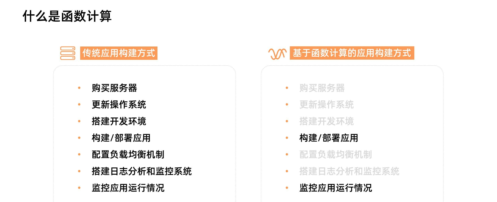
在传统 Serverful 架构下，部署一个应用需要购买服务器，部署操作系统，搭建开发环境，编写代码，构建应用，部署应用，配置负载均衡机制，搭建日志分析与监控系统，应用上线后，继续监控应用的运行情况。而在 Serverless 架构下，开发者只需要关注应用的开发构建和部署，无需关心服务器相关操作与运维，在函数计算架构下，开发者只需要编写业务代码并监控业务运行情况。这将开发者从繁重的运维工作中解放出来，把精力投入到更有意义的业务开发上。
上图展示了函数计算的使用方式。从用户角度，他需要做的只是编码，然后把代码上传到函数计算中。上传代码就意味着应用部署。当有高并发请求涌入时，开发者也无需手动扩容，函数计算会根据请求量毫秒级自动扩容，弹性可靠地运行任务，并内置日志查询、性能监控、报警等功能帮助开发者发现问题并定位问题。
函数计算核心优势
敏捷开发
- 使用函数计算时，用户只需聚焦于业务逻辑的开发，编写最重要的 “核心代码”；
- 不再需要关心服务器购买、负载均衡、自动伸缩等运维操作；
- 极大地降低了服务搭建的复杂性，有效提升开发和迭代的速度。
弹性扩容
- 函数计算根据请求量自动进行弹性扩容，无需任何手动配置；
- 毫秒级调度计算资源，轻松应对业务洪峰。
稳定好可用
- 函数计算分布式集群化部署，支持多可用区；
- 如果某个可用区因自然灾害或电力故障导致瘫痪，函数计算会迅速切换到同区域其他可用区的基础设施运行函数，确保服务高可用。
有竞争力的成本
- 函数计算提供了丰富的计量模式，帮助您在不同场景获得显著成本优势；
- 后付费模型按实际使用计算资源计费，不占用计算资源则不计费，资源利用率高达 100% ；
- 预付费模型根据业务负载估算提前预购计算力，单价更低，组合使用后付费和预付费方式将有效降低成本。
函数计算使用场景
从使用场景来说，主要有三类：
- Web 应用： 可以是各种语言写的，这种可以是使用 Serverless 框架新编写的程序，也可以是已有的应用。比如可能是小程序后端，也可能是 Web API；
- 对计算能力有很强的弹性诉求的应用： 比如 AI 推理、音视频处理、图文转换等；
- 事件驱动型的应用： 比如通过其他阿里云产品驱动的场景，Web Hook、定时任务等。
函数计算已经与很多产品进行了打通，比如对象存储、表格存储、定时器、CDN、日志服务、云监控等十几个产品，可以非常快速地组装出一些业务逻辑。
06 函数计算是如何工作的？
函数计算调用链路

上图展示了函数计算完整的请求和调用链路。函数计算是事件驱动的无服务器应用，事件驱动是说可以通过事件源自动触发函数执行，比如当有对象上传至 OSS 中时，自动触发函数，对新上传的图片进行处理。函数计算支持丰富的事件源类型，包括日志服务、对象存储、表格存储、消息服务、API 网关、CDN 等。
除了事件触发外，也可以直接通过 API/SDK 直接调用函数。调用可以分为同步调用与异步调用，当请求到达函数计算后，函数计算会为请求分配执行环境，如果是异步调用，函数计算会将请求事件存入队列中，等待消费。
函数计算调用方式
同步调用的特性是，客户端期待服务端立即返回计算结果。请求到达函数计算时，会立即分配执行环境执行函数。
以 API 网关为例，API 网关同步触发函数计算，客户端会一直等待服务端的执行结果，如果执行过程中遇到错误， 函数计算会将错误直接返回，而不会对错误进行重试。这种情况下，需要客户端添加重试机制来做错误处理。
异步调用的特性是，客户端不急于立即知道函数结果，函数计算将请求丢入队列中即可返回成功，而不会等待到函数调用结束。
函数计算会逐渐消费队列中的请求，分配执行环境，执行函数。如果执行过程中遇到错误，函数计算会对错误的请求进行重试，对函数错误重试三次，系统错误会以指数退避方式无限重试，直至成功。
异步调用适用于数据的处理，比如 OSS 触发器触发函数处理音视频，日志触发器触发函数清洗日志，都是对延时不敏感，又需要尽可能保证任务执行成功的场景。如果用户需要了解失败的请求并对请求做自定义处理，可以使用 Destination 功能。
函数计算执行过程
函数计算是 Serverless 的，这不是说无服务器，而是开发者无需关心服务器，函数计算会为开发者分配实例执行函数。

如上图所示，当函数第一次被调用的时候，函数计算需要动态调度实例、下载代码、解压代码、启动实例，得到一个可执行函数的代码环境。然后才开始在系统分配的实例中真正地执行用户的初始化函数，执行函数业务逻辑。这个调度实例启动实例的过程，就是系统的冷启动过程。
函数逻辑执行结束后，不会立即释放掉实例，会等一段时间，如果在这段时间内有新的调用，会复用这个实例，比如上图中的 Request 2，由于执行环境已经分配好了，Request 2 可以直接使用，所以 Request 2 就不会遇到冷启动。
Request 2 执行结束后，等待一段时间，如果这段时间没有新的请求分配到这个实例上，那系统会回收实例，释放执行环境。此实例释放后，新的请求 Request 3 来到函数计算，需要重新调度实例、下载代码、解压代码，启动实例，又会遇到冷启动。
所以，为了减小冷启动带来的影响，要尽可能避免冷启动，降低冷启动带来的延时。
使用预留实例可以完全避免冷启动，预留实例是在用户预留后就分配实例，准备执行环境；请求结束后系统也不会自动回收实例。
预留实例不由系统自动分配与回收，由用户控制实例的生命周期，可以长驻不销毁，这将彻底消除实例冷启动带来的延时毛刺，提供极致性能，也为在线应用迁移至函数计算扫清障碍。
如果业务场景不适合使用预留实例，那就要设法降低冷启动的延时，比如降低代码包大小，可以降低下载代码包、解压代码包的时间。Initializer 函数是实例的初始化函数，Initializer 在同一实例中执行且只执行一次，所以可以将一些耗时的公共逻辑放到 Initializer 中，比如在 NAS 中加载依赖、建立连接等等。另外要尽量保持请求连续稳定，避免突发的流量，由于系统已启动的实例不足以支撑大量的突发流量，就会带来不可避免的冷启动。
07 函数粘合云服务提供端到端解决方案
**导读：**阿里云Serverless 产品函数计算可以作为粘合剂， 串联其他云服务提供端到端解决方案， 从而简化编程模型， 快速实现最上层的业务目标。
传统单体应用的拆解
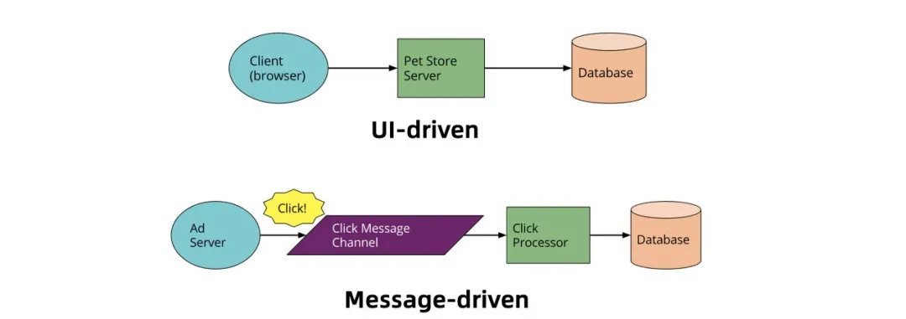
首先我们来看下单体应用里面常见的两个编程模型，如上图所示，一种是 UI-driven，另外一种是 Message-driven。单体应用这种体系结构，客户端可能相对不那么智能，系统中的许多逻辑（比如身份验证、页面导航、搜索、交易等）由服务器应用程序实现，随着业务逻辑复杂度的增长，服务端的应用程序会越发膨胀和难以维护。
而在 Message-driven 异步消息处理这种模式中，需要用户实现一个常驻的、弹性高可用的消费者服务。为了更专注具体业务逻辑的开发，对一个庞大的单体应用进行拆解，充分利用云服务体系结构是一个非常好的解决方案。在这里，最大的关键是如何为应用程序的各个组件选择和使用正确的云服务，而通过函数作为粘合剂来串联云上的托管服务，就是一个非常好的实践。
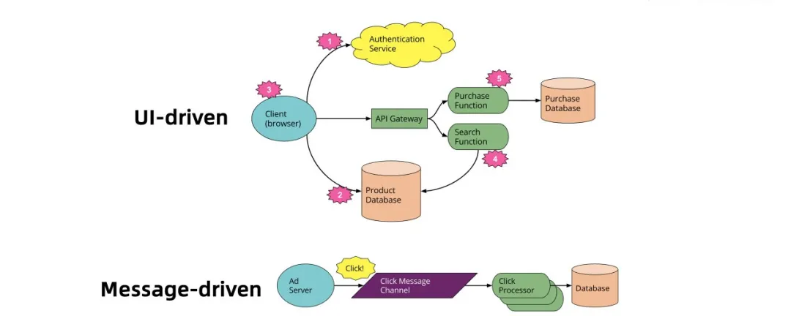
如上图所示，UI-driven 切换到 Serverless 架构以后：
- 第三方 BaaS 服务取代认证逻辑；
- 允许客户端通过临时 token 直接访问架构与第三方上的数据子库（BaaS）；
- 宠物商店服务端的逻辑可以转移到客户端中，例如跟踪用户访问，读取数据库转化为可视视图等，客户端则慢慢转化为单页面应用；
- CPU 密集型或者需要访问大量数据，比如搜索，使用 FaaS 实现，无需一直运行的 server；
- 购买功能使用另外一个 FaaS 实现，因为安全原因放在服务端。
Message-driven 切换到 Serverless 架构以后：
与单体应用示例相比，这里改动很小，同时使用 FaaS 功能替换了长期存在的消息消费者应用程序，消息消费的高可用性交给了云平台去负责。
事件驱动与编排助力完整 Serverless 应用
目前，在很多的人的第一印象中，一般将 FaaS，也就是 Fucntion as a Service（函数即服务）等同于 Serverless， 比如阿里云的函数计算、AWS 的 Lambda，但是实际上有许多其他的云服务也是 Serverless，他们和 FC 一起构建成完整的 Serverless 应用，让用户完全聚焦他最上层和核心的原始业务。比如，用户直接使用 API 网关， 就可以从 API 限流、鉴权等许多 API 层面上需要考虑的繁杂工作中解放出来；直接使用 Serverless 的 NoSQL 数据库 TableStore 或者对象存储 OSS 来持久化数据，替代自己管理数据库实例；使用 SLS 或者 Datahub 从外部系统收集数据流；使用消息服务 MNS/MQ 来管理消息等。
用户可以使用一个个函数将这些 Serverless 服务串联起来，从而达到构建具体复杂的业务逻辑和应用的目标。在这里，用户也可以选择 Serverless 工作流来编排函数和其他云服务，简化了开发和运行业务流程（比如自己去编写代码进行任务协调、状态管理、错误处理以及重试等繁琐工作），让用户聚焦业务逻辑开发。当然，用户也可以使用阿里云提供的开发工具链来简化自动化部署和持续集成。使用这些开箱即可使用的工具可以帮助用户快速达到想要的目标和效果。
如果是一个庞大复杂的单体应用或者是一个面向服务体系的架构，开发者需要负责所有的事情，包括代码的编写、管理和部署数据库以及其他相关的后端服务等，切换到 Servrless 架构， 可以看到：特定的的模块交由特定的托管云服务去处理， 之后再使用实现了具体业务代码的函数将它们串联起来， 也实现了解耦。 为了使这种架构运转的更有效率， 事件驱动是一个必不可少的特性， 比如用户尝试往 OSS 上传一个文件或者更新表格存储会自动做一些逻辑处理，对于开发者来说， 最关心的是什么样的事件可以触发我的编写逻辑。
Serverless 粘合云服务示例
这里有一个有趣的例子：
如上图所示，用户上传图片文件，产生消息事件触发了 FC 函数执行，处理生成了图片缩略图，并将缩略图存储至对象存储 OSS，之后触发了另一个 FC 函数将图片产生的更新信息写入表格存储数据库，最后再触发一个 FC 函数完成搜索模块的更新。整个过程中文件处理存储、搜索服务、表格存储数据库服务被几个 FC 函数粘合为一个业务处理逻辑。
08 函数计算的开发与配置
导读： 在本篇文章中“基本概念”部分主要对函数计算最核心的概念进行详细介绍，包括服务、函数、触发器、版本、别名以及相关的配置；“开发流程”部分介绍了基于函数计算开发的完整开发部署流程。
基本概念
1. 服务

服务是函数计算资源管理的单位，同一个服务下有很多函数，这些函数共享服务的网络配置、权限配置、存储配置、日志配置。
服务可以对应成一个“应用”，这个应用由很多函数共同组成，这些函数具有相同的访问权限、网络配置，日志也记录到相同的 logstore。这些函数本身的配置可以各不相同，比如同一服务下有的函数内存是3G，有的函数内存是 512M，有些函数用 Python 写，有些函数用 Node.js 写。
当然，如果应用比较复杂，同一个应用也可以对应多个服务，这里没有强绑定关系。
1）服务配置

接下来我们介绍服务的几个核心配置：
日志配置： 开发者的代码在函数计算平台运行，如何查看函数运行产生的日志呢？在Server 化的开发方式中，日志都打到统一的文件中，通过 Logstash/Fluentd 这种日志收集工具收集到 ElasticSearch 中，并通过 Kibana 这种可视化工具查看日志及指标。但是在函数计算中，运行代码的机器由函数计算动态分配，开发者无法自己收集日志，函数计算需要帮助开发者投递日志。日志配置就是起到这个作用，配置 LogConfig 设置日志服务的 Project 和 Logstore，函数计算会将函数运行中产生的日志投递到开发者的 Logstore 里。
但是为了成功投递日志，单单配置 Logtore 还不够，函数计算是没有权限向开发者的 Logstore 投递日志的，需要用户授予函数计算向指定的 Logstore 写数据的权限，有了这个授权后，函数计算就可以名正言顺地向开发者的 Logstore 投递日志了。
文件存储配置： 函数计算中每个函数都是独立的，在不同的执行环境中执行，如果用户有一些公共文件希望多个函数共享怎么办呢？在传统 Server 化的开发方式中，好办，将公共文件放到磁盘就好了，各个都去磁盘的同一位置读取，函数计算中的机器是函数计算动态分配的，开发者无法事先将文件存入磁盘，那怎么办呢？可以挂载 NAS，在服务中挂载 NAS 后，函数就可以像访问本地文件系统一样访问 NAS 上的文件了。
网络配置： 网络配置顾名思义就是设置函数的网络访问能力，主要有两种，一个是函数中是否可以访问公网，这是个布尔型的开关，默认是开启的，如果不需要访问公网可以关闭开关。另一个是函数是否可以访问指定 VPC，VPC 是专有网络，专有网络内的数据比较机密，是不能通过公共互联网访问的。如果需要函数访问 VPC 内的资源，比如函数需要访问 VPC 内的 RDS，那就需要授予函数计算访问指定 VPC 的能力，原理是用户授权赋予弹性网卡 ENI 访问 VPC ，并将此 ENI 插入到 FC 中执行用户函数的机器上，从而使函数可以访问 VPC 内资源。
权限： 函数计算是云原生的架构，与云上许多服务产生交互，阿里云有非常严格的权限限制，函数计算是没有能力访问开发者的其他云资源的，当开发者需要函数计算访问其他云服务的时候就需要显示授予函数计算权限。
权限主要有两个应用场景：一个是授予函数计算访问其他服务的权限，比如刚才提到的授权函数计算访问开发者的日志服务、授权函数计算创建 ENI。另一个是授权函数可以访问开发者的云资源，这个是什么呢？举个例子，函数中需要访问 OSS 获取对象，但是又不想暴露 AK，那怎么办呢？开发者可以配置服务中的 Role 有访问 OSS 的权限，函数执行过程中，函数计算会 assumeRole 生成一个临时 AK ，并将这个 AK 存储到函数的上下文 context.credentials 里，开发者在代码中使用context.credentials.access_key_id``/``context.credentials.access_key_secret``/``context.credentials``.``security_token`` 去创建 OSS Client 就可以了。
2. 函数
“函数计算”中函数可谓是核心概念，函数是管理、运行的基本单元，一个函数通常由一系列配置与可运行代码包组成。
1）函数配置
函数的配置如上图所示：
- Runtime 是函数运行时的环境类型： 函数计算目前支持 Node.js/Python/Java/C#/PHP 等开发环境，同时也支持 Custom Runtime 自定义运行时；
- Code 是函数代码包： 函数计算的后端是只认代码包的，各个开发工具会自动帮您打包。比如您可以直接在控制台上编写代码，控制台会自动为您打包创建/更新函数，您可以在本地编写/调试函数，通过命令行工具 Funcraft 部署到函数计算，Funcraft 也会帮您打包；
- Handler 是入口函数： 您在代码包中写了好多函数，那函数计算到底从哪里开始执行呢，就从您指定的入口函数开始执行；
- Timeout 是函数超时时间： 如果函数执行超过这个时间，函数会被强制停止执行；
- MemorySize 是为函数分配的执行环境内存： 目前取值范围是 128M~3G，如果函数耗用内存超过分配的内存，会 OOM；
- Initializer 是初始化函数： 有什么用呢？之前我们介绍函数计算执行环境的时候讲到，函数计算会为函数分配执行环境，第一次分配的时候会有冷启动，当前请求执行完成后，函数计算也不会立即释放，如果在一段时间内有新的请求到达会复用这个执行环境。Initializer 中的逻辑会在分配执行环境后执行，且保证同一个执行环境执行且只执行一次，那就可以将一些建立连接、加载依赖等耗时的操作放到 Initializer 函数中执行；
- InitializerTimeout 就是 Initializer 函数的最大运行时间。
3. 触发器

往期课程中介绍了函数计算支持的丰富的事件源类型，在事件驱动的计算模型中，事件源是事件的生产者，函数是事件的处理者，触发器提供了一种集中、统一的方式来管理不同的事件源。当事件发生时，如果满足触发器定义的规则，事件源会自动调用触发器所对应的函数。
典型的使用场景包括对上传至 OSS 中的对象进行处理，比如图像处理、音视频转码、OSS zip 包解压，以及对 SLS 中的日志进行清洗、处理、转存，在指定时间触发函数执行等等。
4. 版本&别名
上文介绍了服务、函数、触发器，开发者就可以基于函数计算将应用搭建起来了，但又有一个新问题：开发者有了新需求需要更新代码，如何保证线上应用不受影响，平滑迭代上线呢？ 为了解决这个问题，函数计算引入了版本和别名。
版本相当于服务的快照，包括服务的配置、服务内的函数代码及函数配置。当您开发和测试完成后，就发布一个版本，版本单调递增，版本发布后，已发布的版本不能更改，您可以继续在 Latest 版本上开发测试，不会影响已发布的版本。调用函数时，只需要指定版本就可以调用指定版本的函数。
那新问题又来了，版本名称是函数计算指定的单调递增的，每次发布版本，都会有一个新的版本，那每次发完版本后，客户端还要改代码执行最新的版本吗？ 为了解决这个问题呢，我们引入了别名，别名就是指向特定服务版本的指针，发布后，只需要将别名指向发布的版本，再次发布后，再切换别名指向最新的版本，客户端只需要指定别名就可以保证调用线上最新的代码。同时别名支持灰度发布的功能，即有 10% 的流量指向最新版本，90% 理论指向老版本。回滚也非常简单，只需要将别名指向之前的版本即可快速完成回滚。
开发流程

如上图所示，开发者首先创建服务，设置日志、权限等配置，然后创建函数，在当前版本（Latest 版本）下编写代码开发函数，测试通过后发布版本，第一次发布的版本为版本 1，创建别名 prod 指向版本 1，就可以对外提供服务了。
客户端调用函数的日志会记录在开发者配置的 Logstore 里，函数计算提供完备的监控图表，应用上线后，开发者可以通过监控图表和日志查看应用的健康状况。
当开发者有新需求时，继续在 Latest 版本更改代码开发函数，测试通过后发布版本，这次发布的版本为版本 2，切换别名流量 10% 到版本 2，即可实现应用的灰度发布，观察一段时间没有问题，就可以切换 100% 的流量到版本 2 了。
09 函数的调试与部署
函数调试
函数的调试与部署，其实这是两部分内容：调试部分与部署部分。相对来说，调试部分是比较困难的，因为调试本身就是 Serverless 架构的一大弱点。
在开始讲解调试之前，先问大家一个问题：我们写完的代码为什么要有调试的过程呢？不调试行不行？
记得我在上学的时候，无论是考试还是做什么，都少不了一个检查的过程，例如写完作业时，爸妈会说：“做完了检查一下”；考试时，老师会说：“考完了检查一下”；在做完某件事时，我们还要有一个检查的过程，来保证尽可能地少犯错误。
程序也是这样，我们写了一堆代码，难免这个代码会做一些奇奇怪怪的事情，例如说我们少写了一个字母，用错了一个符号，或者说我们的程序输出和预期不一致，我们的程序存在逻辑问题，我们的程序在处理某些业务时少考虑了一些因素，我们的程序……很多问题。这个时候，我们就要自己来检查一下，看看他是不是 OK 的，如果不 OK 要马上修改，如果 OK 了，我们再提交代码、上传代码、部署代码等，这个过程，你就可以认为是调试的过程。
1. 函数调试方式
当然，调试也不是这么容易的，它也有很多的方法和理论，本文就针对函数计算以及相关工具，给大家讲解怎么调试函数计算中的函数们。
1）云调试
首先，第一种方法，是非常简单的，我们只需要打开浏览器，进入到我们的项目页面，就可以点击 Invoke 按钮进行调试。
（在线调用）
上图中可以看到，我们已经完成了调试，输出了 hello world，这种方法非常简单，对于临时使用是非常有效果的。
但是稍微麻烦一些的项目，可能就不太适合在线上调试了，这时，我们就需要本地开发和调试方法，毕竟大部分代码开发应该都在本地，虽然大家都说云端写代码、开发、debug 是未来的趋势，但是至少目前来看，还是本地开发更习惯、更靠谱。
所以这时就需要用我们的插件或者命令行工具了。
2）命令行工具
（命令行工具本地调试）
我们在安装之后，如果想进行本地调试，还要安装 Docker，安装之后，我们可以通过 invoke local 的指令来进行本地的调试。例如上图中，我们可以看到，当我执行完了 fun local invoke demo03/demo03，顺利输出了结果。当然如果你是第一次使用，可能还会涉及到通过 Docker 拉取镜像的过程。
3）VSCode 插件
如果要在编辑器中写代码，该怎么调试？非常简单，使用 VSCode 插件，你只需要点击 VSCode 插件的运行功能，插件就可以自动拉起 Docker，帮助我们本地调试代码。
从上图中可以看到，我们已经顺利输出了结果。
这时就会有人问：还要安装 Docker 吗？没有 Docker 行不行？没有 Docker 当然是不行的，因为这个调试的机制本身就依赖 Docker。但是我们人类往往是具有创造力的：没有条件，就创造条件，所以，下面再给大家分享一个无工具的调试方案。
4）无工具调试
如上图，以 Python 为例，我们只需要增加一段代码，来调用我们的方法，至于 event 可以采用我们即将使用的触发器情况，这样就可以实现简单的调试方法了。
2. 适用场景
上文介绍了这么多的调试方法，什么时候该用哪个呢？
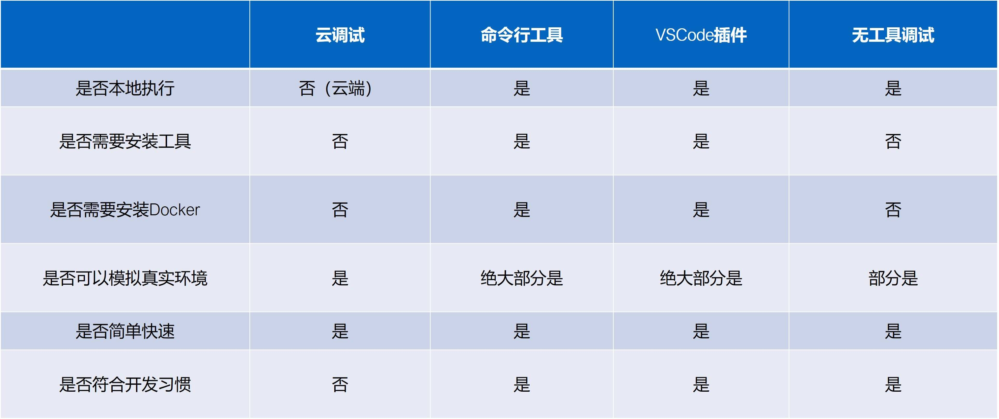
如上图，我们来看一下对比，在一般小的情况下，如果我们不想开编辑器，也不想用 Docker ，想要获取比较靠谱的调试，可以使用云端调试；如果我们想本地调试，和开发更亲密一些，可以用命令行工具或者 VSCode 插件；如果我们不想安装各种工具，那么完全可以采用无工具调试方案。
云端调试虽然不太符合我们的开发习惯，但是这种调试方法可以 100% 模拟“现场场地”；命令行工具或者 VSCode 插件，虽然通过 Docker 镜像方法，已经尽可能地模仿了线上环境，但是对于一些和线上资源交互的场景，尤其是通过 VPC 等和其他资源交互的场景，这种方法未必可以很好地解决类似的问题；无工具调试，只适合临时用一下，它的环境和线上环境天差地别，很可能会对真正上线的结果造成一定影响。
函数部署
函数部署的方法很简单，也不需要特殊的依赖，就算没有 Docker 也可以。
1. 在线部署
在线创建函数上传代码包，或者更新函数上传代码包等。
2. 客户端部署
1）通过命令行工具
如下图所示，通过命令行工具，执行 fun deploy 来进行部署。
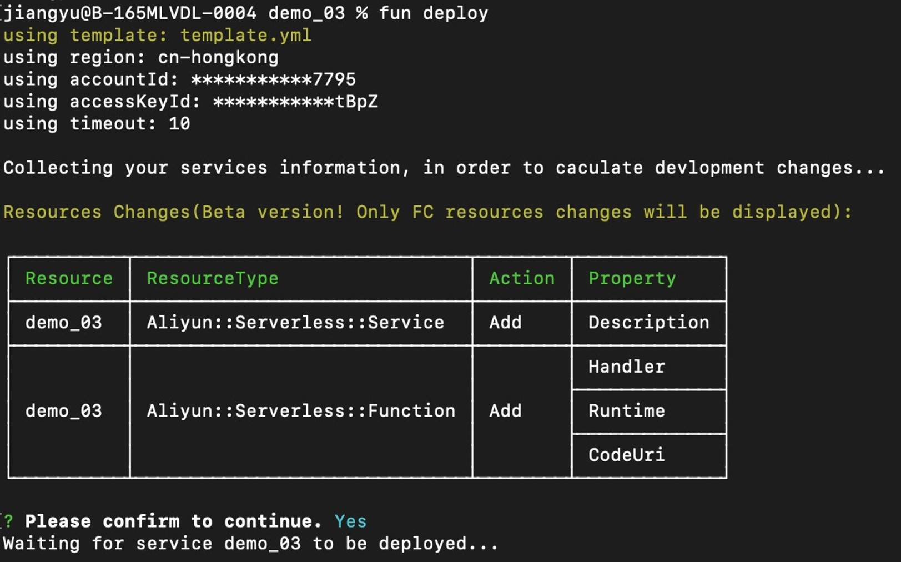
2）通过 VSCode 插件
通过 VSCode 插件，点击上传部署的按钮，即可自动部署。

结语
最后额外说一下，本文并非王婆卖瓜自卖自夸，而是命令行工具的 - h 指令真的很棒，无论使用什么指令，我们都可以通过 - h 查看到使用方法，非常简单方便，不信你也可以偷偷试一下。
10 自动化 CI&CD 与灰度发布
环境管理和自动化部署
当我们从传统开发迁移到 Serverless 下，对于环境和部署的管理思路也会有所不同。当用户转到 Serverless ，可以轻松地提供更多的环境，而这个好处常被忽略。

当我们开发项目时，通常需要一个生产环境，然后需要预发环境，还有一些测试环境。但通常每个环境都需要消耗资源和成本，以保持服务在线。而大多数时候非生产环境上的访问量非常少，为此付出大量的成本很不划算。
但是，在 Serverless 架构中，我们可以为每位开发人员提供一个准生产环境。做 CI/CD 的时候，可以为每个功能分支创建独立的演示环境。
当团队成员在开发功能或者修复 bug 时，想要预览新功能，就可以立即部署，而不需要在自己机器上模拟或者找其他同事协调测试环境的使用时间。
这一切都受益于 Serverless，我们不需要为空闲资源付费。当我们去部署那些基本没有访问量的环境时，成本是极低的。
由于部署新环境变得很容易，对于自动化部署的要求就变高了。当然无论是否采用 Serverless 架构，自动化部署都很重要。能否自动化地构建、部署和创建整个环境是判断开发团队优秀与否的重要因素。在 serverless 场景，这种能力尤为重要，因为只有这样才能充分利用平台的优势。
后面的课程我们会了解到，借助于函数计算平台提供的 Funcraft 工具，开发人员可以用从前做不到的方式在准生产环境中轻松部署和测试代码。
灰度发布
由于 Serverless 提供的弹性机制，没有访问量的时候能自动缩容到零，极大地节约了部署的多环境的成本。然而在同一套环境内的多个不同的版本也可以受益于这套机制。

传统应用虽然也支持在一个环境中并存多个版本，但相比于 Serverless 更加困难。首先每个版本都需要相对独立的运行环境，会消耗更多的资源。其次需要解决多个版本之间流量的分配问题。
在 FaaS 上这些问题已经被版本和别名机制完美的解决。由于没有流量就不消耗计算资源，所以发布一个版本的成本极低，每次发布都可以形成一个版本。然后通过别名进行版本的切换和流量分配。
基于 FaaS 的这套抽象，让灰度发布和 A/B 测试变得非常的简单。不再需要像 K8s 那样复杂的基础设置，开发者也能轻松地享受到平滑升级和快速验证的高级特性。
结语
Serverless 让开发和部署都变得更加的简单。希望您能继续探索其他 Serverless 和函数计算的内容，更多相关的资料可以访问函数计算的产品页 https://www.aliyun.com/product/fc
11 函数计算的可观测性
概述
可观测性是什么呢？维基百科中这样说：可观测性是通过外部表现判断系统内部状态的衡量方式。
在应用开发中，可观测性帮助我们判断系统内部的健康状况。在系统出现问题时，帮助我们定位问题、排查问题、分析问题；在系统平稳运行时，帮助我们评估风险，预测可能出现的问题。评估风险类似于天气预报，预测到明天下雨，那出门就要带伞。在函数计算的应用开发中，如果观察到函数的并发度持续升高，很可能是业务推广团队的努力工作导致业务规模迅速扩张，为了避免达到并发度限制触发流控，开发者就需要提前提升并发度。

可观测性包括三个方面：Logging、Metrics、Tracing
- Logging 是日志，日志记录了函数运行中的关键信息，这些信息是离散且具体的，结合错误日志与函数代码可以迅速定位问题。
- Metrics 是指标，是聚合的数据，通常以图表的形式展现。图表中的 tps、错误率等核心指标，可以反映函数的运行情况与健康状况。
- Tracing 是链路追踪，是请求级别的追踪，在分布式系统中可以看到请求在各个模块的延时、分析性能瓶颈。
函数计算中的 Logging/Metrics/Tracing
1. 日志
在函数计算中如何查看函数日志呢？在传统服务器开发方式中，可以将日志记录到磁盘中的某个文件中，再通过日志收集工具收集文件的内容；而在函数计算中，开发者不需要维护服务器了，那如何收集代码里打印的日志呢？
1）配置日志
函数计算与日志服务无缝集成，可以将函数日志记录到开发者提供的日志仓库（Logstore）中。日志是服务配置中的一项，为服务配置 LogProject 和 Logstore，同一服务下所有函数通过 stdout 打印的日志，都会收集到对应的 Logstore 中。
2）记录日志
那日志怎么打呢？在代码中直接通过 console.log/print 打印的日志可以收集到吗？答案是可以的。各个开发语言提供的打印日志的库都将日志打印到 stdout，比如 node.js 的 console.log()、python 的 print()、golang 的 fmt.Println() 等。函数计算收集所有打印到 stdout 的日志并将其上传到 Logstore 中。
函数计算的调用是请求维度的，每次调用对应一个请求，也就对应一个 requestID。当请求量很大时，会有海量日志，如何区分哪些日志属于哪个请求呢？这就需要把 requestID 一起记录到日志中。函数计算提供内置的日志语句，打印的每条日志前都会带上请求 ID，方便日志的筛选。
3）查看日志
当函数日志被收集到日志服务的 Logstore 中，可以登录日志服务控制台查看日志。
同时，函数计算控制台也集成了日志服务，可以在函数计算控制台上查看日志。函数计算控制台有两种查询方式：
- 简单查询：简单查询中列出每个 requestID 对应的日志，可以通过 requestID 对日志进行筛选；
- 高级查询：高级查询嵌入了日志服务，可以通过 SQL 语句进行查询。
点击链接观看 Demo 演示：https://developer.aliyun.com/lesson202418996
2. 指标
查看指标的方式：
- **函数详情查看监控指标：**FC 提供丰富的系统指标，这些指标可以不用任何配置，就可以在函数计算控制台查看。
- **配置日志大盘：**日志大盘不仅可以看到函数计算提供的监控指标，而且可以与开发者日志关联，生成自定义的监控指标。
3. 链路追踪
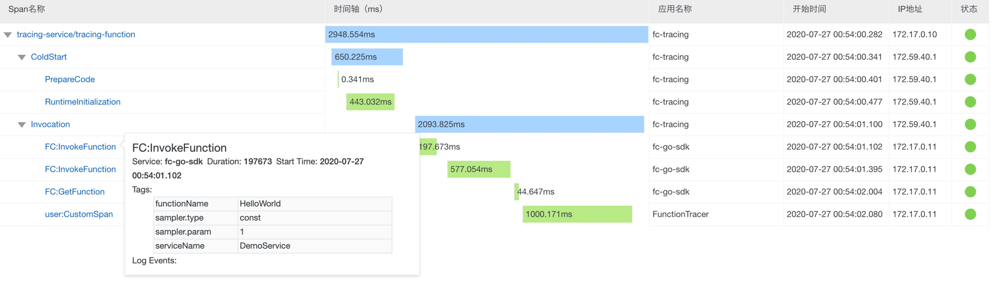 （请求在各个链路的延时瀑布图）
链路追踪是分布式系统排查问题的重要一环，链路追踪可以分析分布式系统中请求在各个链路的时延。有以下几种情况：
- 函数计算作为整个链路中的一环，可以看到请求在函数计算上的时延，时延包括系统启动的时间和请求真正的执行时间，帮助用户分析性能瓶颈。
- 函数计算中调用 FC SDK，可以默认看到 SDK API 的调用时延。
- 开发者在函数代码中访问数据库等产品，可以手动在函数中埋点分析这段时延。
问题排查
函数计算提供了很多可观测性相关的功能，那究竟怎样定位问题呢？以几个场景为例。
场景一：新版本发布后，函数错误率升高
首先发布版本后要观察函数各项指标，一旦错误率升高要立即回滚避免故障，查看函数日志定位错误原因，修复问题再次上线。
场景二：函数性能差，总是执行时间很长，甚至超时
开启 tracing 功能，在函数内部可能耗时的地方进行埋点，查看请求的瀑布图，定位执行时间长的原因，修复问题。
场景三：业务量迅速扩张，并发度即将到达并发度限制
通过 metrics 查看当前并发度，观察到并发度持续上升时，及时联系函数计算开发同学，提升并发度。
课程推荐
为了更多开发者能够享受到 Serverless 带来的红利，这一次，我们集结了 10+ 位阿里巴巴 Serverless 领域技术专家，打造出最适合开发者入门的 Serverless 公开课，让你即学即用，轻松拥抱云计算的新范式——Serverless。
12 典型案例 1：函数计算在音视频场景实践
说到迁移，大家可能都会比较感兴趣，毕竟想要尝鲜 Serverless，完全新作一些东西是不太现实的，但是迁移已有的就会很有意思。如果我们可以非常简单快速地，将已有的 Web 项目迁移到 Serverless 架构上，实现一键上 Serverless 架构，将会给大家带来很多便利。
众所周知，Serverless 架构拥有很多优秀的特性，例如：
- 按量付费：根据请求量进行收费，无请求时不收费；
- 弹性伸缩：用户无需关注流量洪峰，只需要将项目部署到 Serverless 架构，函数计算本身就具有着极强的弹性能力，可以快速地帮助大家进行动态扩容和缩容。
如果我们可以将自己已有的一些 Web 项目部署到函数计算上，那么我们自己的这些项目也将会拥有以上特性。
操作步骤演示
- 点击查看【视频演示】
1. 准备一个 Express 项目
先准备一个已经存在的 Express 项目进行测试，如果没有 Express 项目，我们可以初始化一个。
初始化完成，我们可以按照提示，进行 npm install，安装相关的依赖。此时，我们的一个 Express 项目就完成了初始化。
2. 通过 Fun 工具一键部署
当我们项目完成初始化之后，我们可以通过 Funcraft 工具，一键进行项目部署。所谓的一键进行项目部署，并不夸张，因为，你只需要执行 fun deploy -y，系统会自动识别您的项目类型，并且帮您进行部署。
完成部署之后，我们可以看到一个自定义域名，打开这个网址，可以看到，一个 express 的本地项目已经完成了部署，并且已发布到线上。
至此，我们完成了一个简单的 Web 框架的迁移。
当然，函数计算所拥有的一键迁移能力不仅仅是 Express 框架，更多相关的资料可以访问函数计算的产品页！
13 典型案例 3：十分钟搭建弹性可扩展的 Web API
基本概念

常见的 WebAPI 架构如上图所示，主要包括客户端（浏览器）、服务器、数据库，WebAPI 由服务器提供，同时服务器要完成负载均衡、登录鉴权的相关操作。
当客户端流量快速增大时，服务器端只能通过水平扩展加机器的方式来增加提高服务能力。
这种常规模式主要有两点局限性：
- 技术同学除了开发业务代码，有大量的服务器运维成本，来保证服务的稳定性、可用性，技术同学要花费很多时间进行运维工作，占用开发时间，降低项目研发效率。
- 流量突然增加时，需要水平扩展加机器，弹性的响应能力差，扩容速度往往要数十分钟，无法实现秒级极速扩容，导致一段时间内的服务能力不足。同时当流量变少时，难以做到及时缩容，造成机器的成本浪费。
基于函数计算的 WebAPI 架构如上图所示，与常规的 WebAPI 架构相比，客户端和数据库未发生变化，但服务器变化巨大，主要体现在：
- 之前需要开发团队维护的路由模块以及鉴权模块都将接入服务商提供的 API 网关系统以及鉴权系统，开发团队无须再维护这两部分的业务代码，只需要持续维护相关规则即可。
- 在这个结构下，业务代码也被拆分成了函数粒度，不同函数表示不同的功能。
- 我们已经看不到服务器的存在，是因为 Serverless 的目的是让使用者只关注自己的业务逻辑即可，所以一部分安全问题、资源调度问题（例如用户量暴增、如何实现自动扩容等）全都交给云厂商负责。
- 相对于传统项目而言，传统项目无论是否有用户访问，服务都在运行中，都是有成本支出，而 Serverless 而言，只有在用去发起请求时，函数才会被激活并执行，且会按量收费，可以实现在有流量的时候才有支持，没有流量的时候就没有支出，相对来说，成本会进一步降低。
开发流程
1. 登录函数计算控制台，创建应用

可以通过两种方式来创建应用，如果是已有的 Web 项目，可以选择上图中的第一种方式：“常见 Web 应用”；对于新项目则推荐使用第二种方式：“基于模板创建应用”。我们这里使用模板方式，选择基于 Python 的 Web 应用。
模板可以当做应用脚手架，选择适合的模板，可以自动完成相关依赖资源的创建，如角色、OSS、域名网关等，降低开发成本。
2. 新建函数

在应用下，创建函数，我们是开发 WebAPI，所以选择“HTTP”函数，这种函数会将指定的 http 请求作为触发器，来调度对应函数的执行。
函数新建好之后，是个返回 helloWorld 的 demo，我们在此基础上来开发我们的业务逻辑。

首先介绍下上图代码中的 handler 函数，这个函数是入口函数，http 触发器接收到调用后会通过这个入口来启动整个函数。函数有两个入参，environ 和 start_response：
- environ
environ 中主要包含两部分内容：http 请求的入参和函数执行上下文 fcContext，函数上下文参数中包含一些函数运行时的信息（例如 request id 、 临时 AK ），您在代码中可以使用这些信息。信息类型是 FCContext。
- start_response
该参数主要用于生成 http 请求的 response。
3. 配置触发器，绑定域名
在新建函数时会自动创建一个 http 触发器，这个触发器的路径是“aliyun.com”的一个测试路径，只能用于测试，真实的应用需要通过自定义域名将真实域名与函数绑定，这样访问指定域名时，对应函数就会被触发执行。
4. 日志与监控
在每个函数编辑页面，日志和监控服务，函数的每次执行都会生成唯一的 requestId，日志中通过 requestId 进行查询，看到本次函数执行的所有日志。
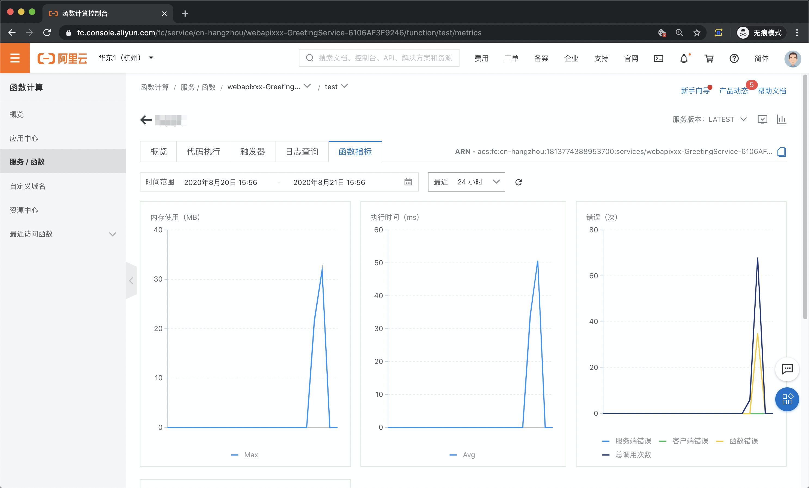
操作演示
点击链接即可观看演示视频：https://developer.aliyun.com/lesson202418999
14 Serverless Kubernetes 容器服务介绍
**导读：**Serverless Kubernetes 是以容器和 kubernetes 为基础的 Serverless 服务，它提供了一种简单易用、极致弹性、最优成本和按需付费的 Kubernetes 容器服务，其无需节点管理和运维，无需容量规划，让用户更关注应用而非基础设施的管理。我们可以把 Serverless Kubernetes 简称为 ASK。
Serverless 容器
首先从 Serverless 开始讲起，相信我们已经熟知 Serverless 理念的核心价值，其中包括无需管理底层基础设施，无需关心底层 OS 的升级和维护，因为 Serverless 可以让我们更加关注应用开发本身，所以应用的上线时间更短。同时 Serverless 架构是天然可扩展的，当业务用户数或者资源消耗增多时，我们只需要创建更多的应用资源即可，其背后的扩展性是用户自己购买机器所无法比拟的。Serverless 应用一般是按需创建，用户无需为闲置的资源付费，可以降低整体的计算成本。

以上所讲的几种都是 Serverless 理念的核心价值，也是 Serverless 容器与其他 Sererless 形态的相同之处。然而，Serverless 容器和其他 Serverless 形态的差异，在于它是基于容器的交付形态。
基于容器意味着通用性和标准性，我们可以 Build once and Run anywhere，容器不受语言和库的限制，无论任何应用都可以制作成容器镜像，然后以容器的部署方式启动。基于容器的标准化，开源社区以 Kubernetes 为中心构建了丰富的云原生 Cloud Native 生态，极大地丰富了 Serverless 容器的周边应用框架和工具，比如可以非常方便地部署 Helm Chart 包。基于容器和 Kubernetes 标准化，我们可以轻松地在不同环境中（线上线下环境），甚至在不同云厂商之间进行应用迁移，而不用担心厂商锁定。这些都是 Serverless 容器的核心价值。
 （Serverless 容器产品 Landscape）
（Serverless 容器产品 Landscape）
当下各大云厂商都推出了自己的 Serverless 容器服务，上图为 Gartner 评估机构整理的 Serverless 容器产品 Landscape，其中阿里云有 Serverless Kubernetes ASK 和 ECI；AWS 有 Fargate，基于 Fargate 有 EKS on Fargate 和 ECS on Fargate 两种形态；Azure 有 ACI。另外 Gartner 也预测，到 2023 年，将有 70% 的 AI 应用以容器和 Serverless 方式运行。
ASK/ACK on ECI 容器服务
下面介绍阿里云 Serverless 容器产品家族：ECI、 ACK on ECI 和 Serverless Kubernetes。
1. ECI

ECI 全称是“Elastic Container Instance 弹性容器实例”，是 Serverless 容器的底层基础设施，实现了容器镜像的启动。ECI 让容器成为和 ECS 一样的云上一等公民。ECI 底层运行环境基于安全容器技术进行强隔离，每个 ECI 拥有一个独立的 OS 运行环境，保证运行时的安全性。ECI 支持 0.25c 到 64c 的 CPU 规格，也支持 GPU，按需创建按秒收费。和 ECS 一样，ECI 也支持 Spot 可抢占式实例，在一些场景中可以节省 90% 的成本。ECI 实例的启动时间目前约是 10s 左右，然后开始拉取容器镜像。我们也提供了镜像快照功能，每次容器启动时从快照中读取镜像，省去远端拉取的时间。值得强调的是，ECI 和 ECS 共用一个弹性计算资源池，这意味着 ECI 的弹性供给能力可以得到最大程度的充分保障，让 ECI 用户享受弹性计算资源池的规模化红利。
ECI 只可以做到单个容器实例的创建，而没有编排的能力，比如让应用多副本扩容，让 SLB 和 Ingress 接入 Pod 流量，所以我们需要在编排系统 Kubernetes 中使用 ECI，我们提供了两种在 Kubernetes 中使用 ECI 的方式。一个是 ACK on ECI，另外一个是 ASK。

在与 Kubernetes 编排系统的集成中，我们以 Pod 的形式管理每个 ECI 容器实例，每个 Pod 对应一个 ECI 实例， ECI Pod 之间相互隔离，一个 ECI Pod 的启动时间约是 10s。因为是在 Kubernetes 集群中管理 ECI Pod，所以完全连接了 Kubernetes 生态，有以下几点体现：
- 很方便地用 Kubectl 管理 ECI Pod，可以使用标准的 Kubernetes 的 API 操作资源；
- 通过 Service 和 Ingress 连接 SLB 和 ECI Pod；
- 使用 Deployment / Statefulset 进行容器编排，使用 HPA 进行动态扩容；
- 可以使用 Proms 来监控 ECI Pod；
- 运行 Istio 进行流量管理，Spark / Presto 做数据计算，使用 Kubeflow 进行机器学习；
- 部署各种 Helm Chart。
这些都是使用 Kubernetes 管理容器实例的价值所在。
需要留意的是 Kubernetes 中的 ECI Pod 是 Serverless 容器，所以与普通的 Pod 相比，不支持一些功能（比如 Daemonset），不支持 Prividge 权限，不支持 HostPort 等。除此之外，ECI Pod 与普通 Pod 能力一样，比如支持挂载云盘、NAS 和 OSS 数据卷等。
2. ACK on ECI
接下来我们看下在 ACK Kubernetes 集群中使用 ECI 的方式。这种方式适合于用户已经有了一个 ACK 集群，集群中已经有了很多 ECS 节点，此时可以基于 ECI 的弹性能力来运行一些短时间 Short-Run 的应用，以解决元集群资源不足的问题，或者使用 ECI 来支撑应用的快速扩容，因为使用 ECI 进行扩容的效率要高于 ECS 节点扩容。
在 ACK on ECI 中，ECS 和 ECI Pod 可以互联互通，ECI Pod 可以访问集群中的 Coredns，也可以访问 ClusterIP Service。
3. Serverless Kubernetes

与 ACK on ECI 不同的是，ASK Serverless Kubernetes 集群中没有 ECS 节点，这是和传统 Kubernetes 集群最主要的差异，所以在 ASK 集群中无需管理任何节点，实现了彻底的免节点运维环境，是一个纯粹的 Serverless 环境，它让 Kubernetes 的使用门槛大大降低，也丢弃了繁琐的底层节点运维工作，更不会遇到节点 Notready 等问题。在 ASK 集群中，用户只需关注应用本身，而无需关注底层基础设施管理。
ASK 的弹性能力会优于普通 Kubernetes 集群，目前是 30s 创建 500 个 Pod 到 Running 状态。集群中 ECI Pod 默认是按量收费，但也支持 Spot 和预留实例劵来降低成本。在兼容性方面，ASK 中没有真实节点存在，所以不支持 Daemonset 等与节点相关的功能，像 Deployment / Statefulset / Job / Service / Ingress / CRD 等都是无缝支持的。
ASK 中默认的 Ingress 是基于 SLB 7 层转发实现，用户无需部署 Nginx Ingress，维护更加简单。
同时基于 SLB 7 层我们实现了 Knative Serving 能力，其中 Knative Controller 被 ASK 托管，用户无需负担 Controller 的成本。
与 ACK 一样，ASK 和 Arms / SLS 等云产品实现了很好的集成，可以很方便地对 Pod 进行监控，把 Pod 日志收集到 SLS 中。

这是 ASK 的整体架构，核心部分是 ASK-Schduler，它负责 Watch Pod 的变化，然后创建对应的 ECI 实例，同时把 ECI 实例状态同步到 Pod。集群中没有真实 ECS 节点注册到 Apiserver。这个 Nodeless 架构解耦了 Kubernetes 编排层和 ECI 资源层，让 Kubernetes 彻底摆脱底层节点规模导致的弹性和容量限制，成为面向云的 Nodeless Kubernetes 弹性架构。
ASK 典型功能
下面介绍 ASK 的几个典型功能：
1. GPU 实例
第一个是 GPU 实例，在 Serverless 集群中使用 GPU 容器实例是一件非常简单的事情，不需要安装 GPU 驱动，只需要指定 GPU Pod 规格，以及容器需要的 GPU 卡数，然后就可以一键部署，这对于机器学习场景可以极大提高开发和测试的效率。
2. Spot 抢占式实例

第二个是 Spot 抢占式实例。抢占式实例是一种按需实例，可以在数据计算等场景中降低计算成本。抢占式实例创建成功后拥有一小时的保护周期。抢占式实例的市场价格会随供需变化而浮动，我们支持两种 Spot 策略，一种是完全根据市场出价，一种是指定价格上限，我们只需要给 Pod 加上对应的 Annotation 即可，使用方法非常简单。
3. 弹性负载 Elastic Workload
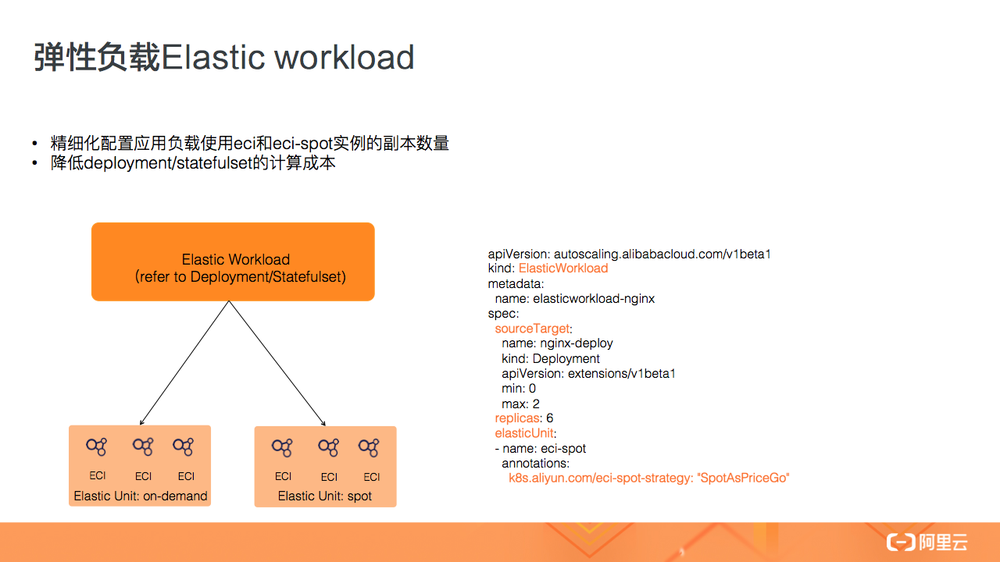
第三个重要功能是弹性负载 Elastic Workload，弹性负载实现了 Deployment 多个副本调度在不同的单元上，比如 ECS、ECI 和 ECI-Spot 上，通过这种混合调度的模式，可以降低负载的计算成本。在这个示例中，Deployment 是 6 个副本，其中 2 个为正常的 ECI Pod，其他副本为 ECI-Spot 实例。
ASK 使用场景
上面我们已经对 Serverless Kubernetes 做了基本的产品和功能介绍，那么 ASK 适合在哪些场景中使用呢？**
1. 免运维应用托管
Serverless 集群最大的特点是解决了底层节点资源的运维问题，所以其非常适合对应用的免运维托管，让用户关注在应用开发本身。在传统 K8s 集群中的应用可以无缝部署在 Serverless 集群中，包括各种 Helm Chart。同时结合预留实例劵可以降低 Pod 的长计算成本。
2. ECI 弹性资源池

第二个场景是 ACK on ECI 的优势，我们可以选择把 ECI 作为弹性资源池，加到已有的 Kubernetes 集群中，当应用业务高峰来临时，通过 ECI 动态灵活地扩容，相比 ECS 节点扩容更有效率，这种比较适合电商或者在线教育这类有着明显波峰波谷的业务场景，用户无需管理一个很大的节点资源池，通过 ECI 弹性能力来降低整体计算成本。
3. 大数据计算

第三个场景是大数据计算，很多用户使用 Serverless 集群或者 ACK on ECI 来进行 Spark / Presto / AI 等数据计算或者机器学习，利用 ECI 可以轻松解决资源规划和不足的问题。
4. CI/CD 持续集成

第四个场景是 CI/CD 持续集成，将 Jenkins 和 Gitlab-Runner 对接 ASK 集群，按需创建 CI/CD 构建任务，构建完成后直接部署到 ASK 测试环境进行验证，这样我们无需为 Job 类任务维护一个固定资源池，按需创建极大降低成本，另外如果结合 Spot 实例还能进一步降低成本。
以上就是 Serverless Kubernetes 集群的典型场景，另有快速使用链接、产品文档以及使用示例，供大家学习交流：
15 Serverless Kubernetes 应用部署及扩缩容
**导读：**本文分为三个部分，首先给大家演示 Serverless Kubernetes 集群的创建和业务应用的部署，其次介绍 Serverless Kubernetes 的常用功能，最后对应用扩缩容的操作进行探讨。
集群创建及应用部署
1. 集群创建
在对 Serverless Kubernetes 的基础概念有了充分了解之后，我们直接进入容器服务控制台（https://cs.console.aliyun.com/#/authorize）进行集群的创建。
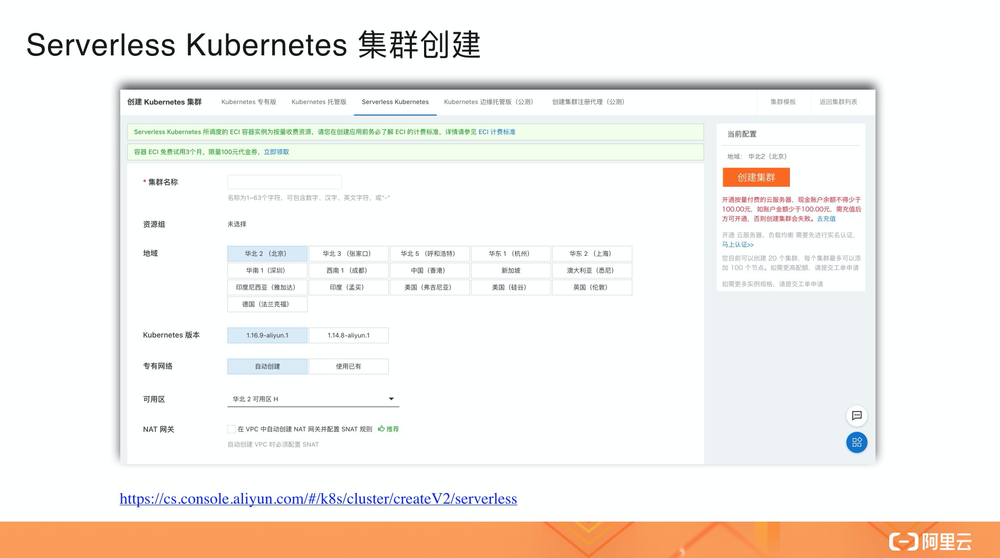
在创建页面，主要有三类属性需要选择或填写：
- 集群创建的地域和 Kubernetes 的版本信息；
- 网络属性：可以选择容器服务自动创建或者指定已有的 VPC 资源；
- 集群能力和服务：可以按需选择。
属性完成后，点击“创建集群”即可，整个创建过程需要 1~2 分钟的时间。

2. 应用部署
集群创建完成后，接下来我们部署一个无状态的 nginx 应用，主要分成三步：
- 应用基本信息：名称、POD 数量、标签等；
- 容器配置：镜像、所需资源、容器端口、数据卷等；
- 高级配置：服务、路由、HPA、POD 标签等。

创建完成后，在路由中就可以看到服务对外暴露的访问方式了。

如上图所示，在本地 host 绑定 ask-demo.com 到路由端点 123.57.252.131 的解析，然后浏览器访问域名，即可请求到部署的 nginx 应用。
常用功能介绍
我们一般会通过容器服务控制台和 Kubectl 两种方式，来使用 Serverless Kubernetes 的常用功能。
1. 容器服务控制台

在容器服务控制台上，我们可以进行以下功能的白屏化操作：
- 基本信息：集群 ID 和运行状态、API Server 端点、VPC 和安全性、集群访问凭证的查看和操作；
- 存储卷：PV、PVC、StorageClass 的查看和操作；
- 命名空间：集群 namespace 的查看和操作；
- 工作负载：Deployment、StatefulSet、Job、CronJob、Pod 的查看和操作；
- 服务：工作负载提供出的 Service 的查看和操作；
- 路由：Ingress 的查看和操作，用来路由 Service；
- 发布：对基于 Helm 或者容器服务分批发布的任务进行查看和操作；
- 配置管理：对 ConfigMap 和 Secret 的查看和操作；
- 运维管理：集群的事件列表和操作审计。
2. Kubectl
除了通过控制台，我们还可以基于 Kubectl 来进行集群操作和管理。
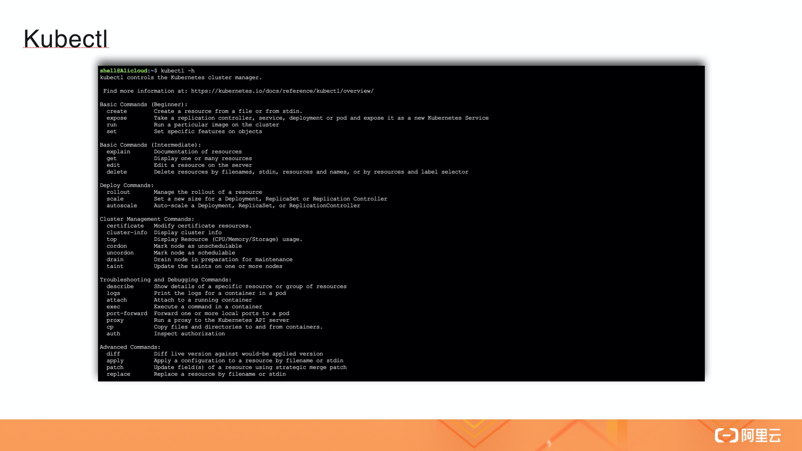
我们可以在云端通过 CloudShell 来使用 Kubectl，也可以在本地安装 Kubectl，然后通过将集群的访问凭证写入到 kubeconfig 来使用 Serverless Kubernetes 。
应用弹性伸缩
通通过上面的内容讲解，我们已经了解了应用的部署和集群的常用操作，下面为大家介绍一下如何为应用做扩缩容操作。
在 Serverless Kubernetes 中常用的应用扩缩容方式包括：
- 人工扩缩容：最为原始的方式，在成本和应用稳定性上均有一定程度的牺牲；
- HPA（Horizontal Pod Autoscaler）：根据 Cpu 和 Memory 等指标来弹性伸缩，适合有突发流量场景的应用；
- Cron HPA ：根据 Cron 表达式来定期伸缩，适合有固定波峰波谷特性的应用；
- External Metrics（alibaba-cloud-metrics-adapter）：阿里云指标容器水平伸缩，在原生 HPA 的基础上支持更多的数据指标。
结语
以上就是 Serverless Kubernetes 应用部署及扩缩容的全部分享，希望通过这次分享能够帮助大家更好地入门和使用 Serverless Kubernetes，后续也将会有更多的 Serverless Kubernetes 的实践案例分享给大家。
16 使用 Spot 低成本运行 Job 任务
成本优化
ECI 除了有秒级弹性、无限容量的优势之外，在一些特定场景下对成本的优化也是非常明显的，通过上图我们可以看到，相同规格的实例，在日运行时间少于 14 小时的时候，使用 ECI 会更加便宜。
除了日运行时长小于 14 小时的情形，ECI 实例还支持多种计费类型，客户可以根据自身业务选择相应的计费模式：long run 类型的可以采用 RI 实例券；运行时长低于 1 小时可以选用 Spot 竞价实例；针对突发流量部分，采用按量实例。
Spot 实例概述
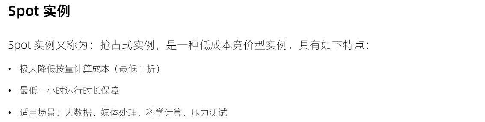
抢占式实例是一种按需实例，可以在数据计算等场景中降低计算成本。抢占式实例创建成功后拥有一小时的保护周期。抢占式实例的市场价格会随供需变化而浮动，我们支持两种 spot 策略，一种是完全根据市场出价，一种是指定价格上限，我们只需要给 pod 加上对应的 annotation 即可，使用方法非常简单。

- SpotAsPriceGo：系统自动出价，跟随当前市场实际价格（通常以折扣的形式体现）
- SpotWithPriceLimit：设置抢占实例价格上限
- 用户价格 < Spot 市场价格，实例会处于 pending 状态，并每 5 分钟自动进行一次出价，当价格等于或高于市场价格时，开始自动创建实例。运行一小时后，市场价格如果高于用户价格，则实例随时可能会被释放；
- 用户价格 >= Spot 市场价格，如果库存充足则自动创建实例，按成功创建实例时的市场价格来计价，默认市场价格为小时价，将小时价除以 3600 即可得到每秒的价格。抢占式实例按秒计费；
- 用户价格 >= ECI 按量实例价格，使用 ECI 按量实例价格来创建实例。
创建 Spot 实例

- 根据规格查看实例按量价格，点击查询
首先我们查询出【华北 2（北京）地域 ecs.c5.large 按量（小时）价格：0.62】，然后我们以此规格来创建 Spot 竞价实例。
采用 Spot 实例来运行 CronJob，分别采用“指定最高限价”、“系统自动出价”的方式。随市场价的场景目前还没有办法直接看到真实的价格，只能根据实例 ID 查询账单信息。

采用 Spot 实例运行 Deployment，在本次实验中我们采用指定最高限价的策略，并设置一个极低的小时价格，可以看到 2 个 Pod 都创建失败了，使用 kubectl describe 命令可以看到失败的详细原因为价格不匹配：The current price of recommend instanceTypes above user max price。

如上图所示，当 Spot 实例运行超过 1 小时保护期后，有可能会因为库存不足，或者设置的价格小于市场价而触发实例释放，实例释放前 3 分钟会有事件通知。
应用场景
您可以在抢占式实例上部署以下业务：
- 实时分析业务
- 大数据计算业务
- 可弹性伸缩的业务站点
- 图像和媒体编码业务
- 科学计算业务
- 地理空间勘测分析业务
- 网络爬虫业务
- 测试业务
抢占式实例适用于无状态的应用场景，例如可弹性伸缩的 Web 站点服务、图像渲染、大数据分析和大规模并行计算等。应用程序的分布度、可扩展性和容错能力越高，越适合使用抢占式实例节省成本和提升吞吐量。
注意事项
- 如何避免出价过低导致实例抢占失败？
需要结合自身业务特征，并充分考虑到市场价格波动的情况下选择合理的出价。
- 系统自动出价，1 小时到期后是否会被释放？
1 小时到期时，系统会尝试再次出价，如库存充足则不会被释放。
- 系统自动出价上限是多少？
不超过相同规格按量最高价（原价）。
- 是否仅支持 ECS InstanceType 形式？
抢占式 ECI 实例依然支持 ECS InstanceType、CPU / 内存形式两种创建方式。
- 是否支持 GPU 实例？
支持，跟非 GPU 方式一样。
17 低成本运行 Spark 数据计算
产品介绍
阿里云弹性容器实例 ECI
ECI 提供安全的 Serverless 容器运行服务。无需管理底层服务器，只需要提供打包好的 Docker 镜像，即可运行容器，并仅为容器实际运行消耗的资源付费。
阿里云容器服务产品族
不论是托管版的 Kubernetes（ACK）还是 Serverless 版 Kubernetes（ASK），都可以使用 ECI 作为容器资源层，其背后的实现就是借助虚拟节点技术，通过一个叫做 Virtual Node 的虚拟节点对接 ECI。
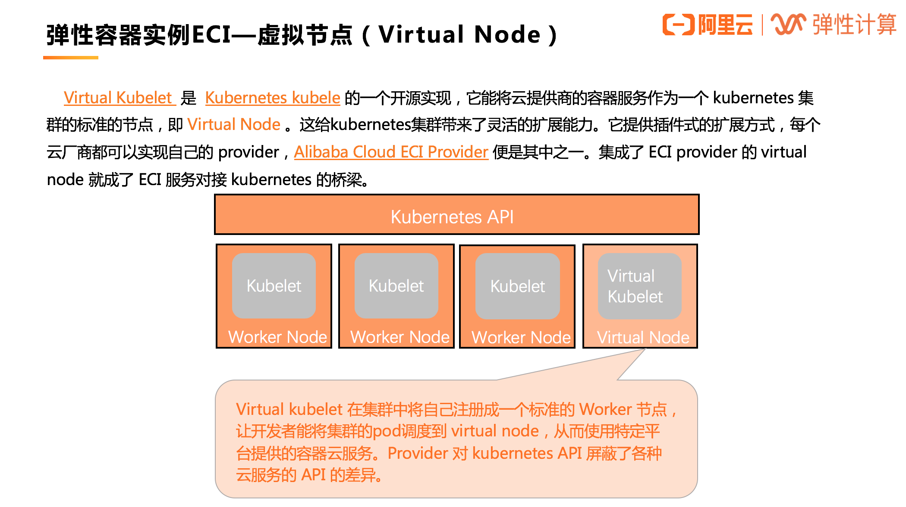
Kubernetes + ECI
有了 Virtual Kubelet，标准的 Kubernetes 集群就可以将 ECS 和虚拟节点混部，将 Virtual Node 作为应对突发流量的弹性资源池。

ASK（Serverless Kubernetes）+ ECI
Serverless 集群中没有任何 ECS worker 节点，也无需预留、规划资源，只有一个 Virtual Node，所有的 Pod 的创建都是在 Virtual Node 上，即基于 ECI 实例。
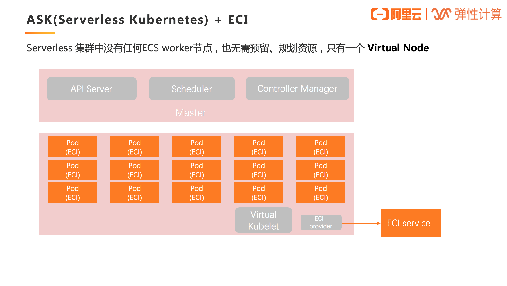
Serverless Kubernetes 是以容器和 Kubernetes 为基础的 Serverless 服务，它提供了一种简单易用、极致弹性、最优成本和按需付费的 Kubernetes 容器服务，其中无需节点管理和运维，无需容量规划，让用户更关注应用而非基础设施的管理。
Spark on Kubernetes
Spark 自 2.3.0 开始试验性支持 Standalone、on YARN 以及 on Mesos 之外的新的部署方式：Running Spark on Kubernetes，如今支持已经非常成熟。
Kubernetes 的优势
Spark on kubernetes 相比于 on Yarn 等传统部署方式的优势：
- 统一的资源管理。不论是什么类型的作业都可以在一个统一的 Kubernetes 集群中运行，不再需要单独为大数据作业维护一个独立的 YARN 集群。
- 传统的将计算和存储混合部署，常常会为了扩存储而带来额外的计算扩容，这其实就是一种浪费；同理，只为了提升计算能力，也会带来一段时期的存储浪费。Kubernetes 直接跳出了存储限制，将离线计算的计算和存储分离，可以更好地应对单方面的不足。
- 弹性的集群基础设施。
- 轻松实现复杂的分布式应用的资源隔离和限制，从 YRAN 复杂的队列管理和队列分配中解脱。
- 容器化的优势。每个应用都可以通过 Docker 镜像打包自己的依赖，运行在独立的环境，甚至包括 Spark 的版本，所有的应用之间都是完全隔离的。
- 大数据上云。目前大数据应用上云常见的方式有两种：1）用 ECS 自建 YARN（不限于 YARN）集群；2）购买 EMR 服务，目前所有云厂商都有这类 PaaS，如今多了一个选择——Kubernetes。
Spark 调度
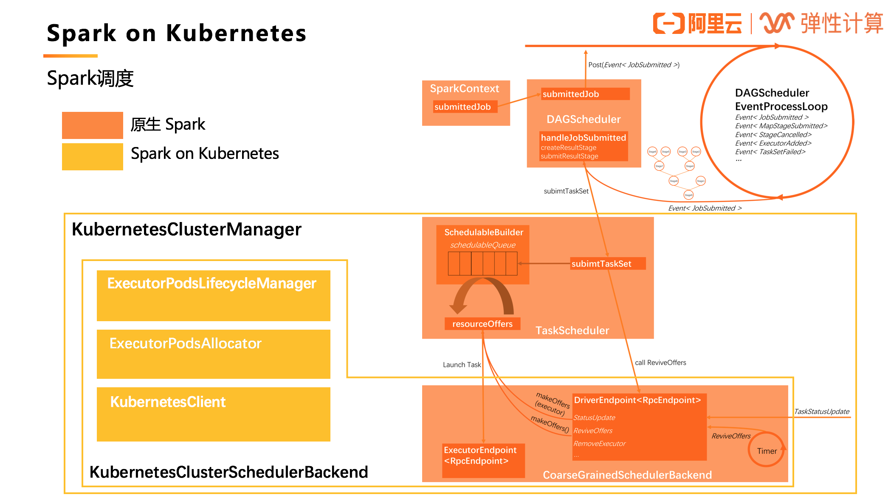
图中橙色部分是原生的 Spark 应用调度流程，而 Spark on Kubernetes 对此做了一定的扩展（黄色部分），实现了一个 KubernetesClusterManager。其中 **KubernetesClusterSchedulerBackend 扩展了原生的CoarseGrainedSchedulerBackend，**新增了 **ExecutorPodsLifecycleManager、ExecutorPodsAllocator 和 KubernetesClient **等组件，实现了将标准的 Spark Driver 进程转换成 Kubernetes 的 Pod 进行管理。
Spark submit
在 Spark Operator 出现之前，在 Kubernetes 集群提交 Spark 作业只能通过 Spark submit 的方式。创建好 Kubernetes 集群，在本地即可提交作业。

作业启动的基本流程：
- Spark 先在 K8s 集群中创建 Spark Driver（pod）。
- Driver 起来后，调用 K8s API 创建 Executors（pods），Executors 才是执行作业的载体。
- 作业计算结束，Executor Pods 会被自动回收，Driver Pod 处于 Completed 状态（终态）。可以供用户查看日志等。
- Driver Pod 只能被用户手动清理，或者被 K8s GC 回收。
直接通过这种 Spark submit 的方式，参数非常不好维护，而且不够直观，尤其是当自定义参数增加的时候；此外，没有 Spark Application 的概念了，都是零散的 Kubernetes Pod 和 Service 这些基本的单元，当应用增多时，维护成本提高，缺少统一管理的机制。
Spark Operator
Spark Operator 就是为了解决在 Kubernetes 集群部署并维护 Spark 应用而开发的，Spark Operator 是经典的 CRD + Controller，即 Kubernetes Operator 的实现。
下图为 SparkApplication 状态机：

Serverless Kubernetes + ECI
那么，如果在 Serverless Kubernetes 集群中运行 Spark，其实际上是对原生 Spark 的进一步精简。
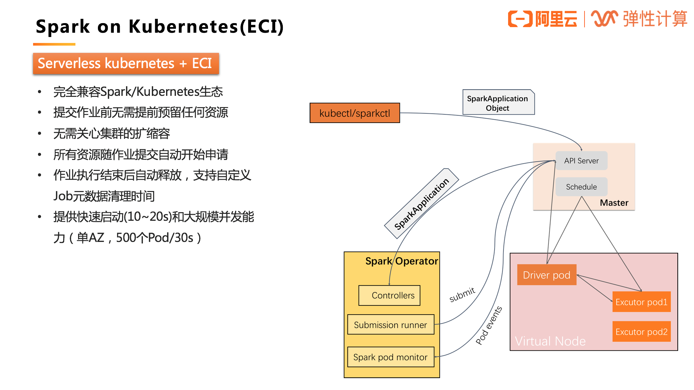
存储选择
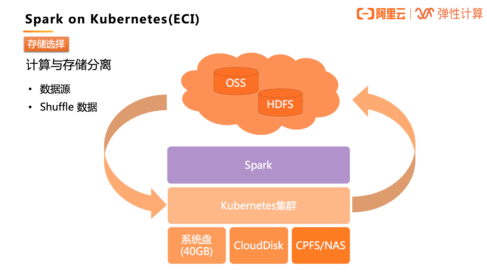
对于批量处理的数据源，由于集群不是基于 HDFS 的，所以数据源会有不同，需要计算与存储分离，Kubernetes 集群只负责提供计算资源。
- 数据源的存储可以采用阿里云对象存储 OSS、阿里云分布式存储 HDFS 等。
- 计算的临时数据、Shuffle 数据可以采用 ECI 提供的免费的 40GB 的系统盘存储空间，还可以自定义挂载阿里云数据盘、以及 CPFS/NAS 文件系统等，都拥有非常不错的性能。
18 GPU 机器学习开箱即用
ECI GPU 简介
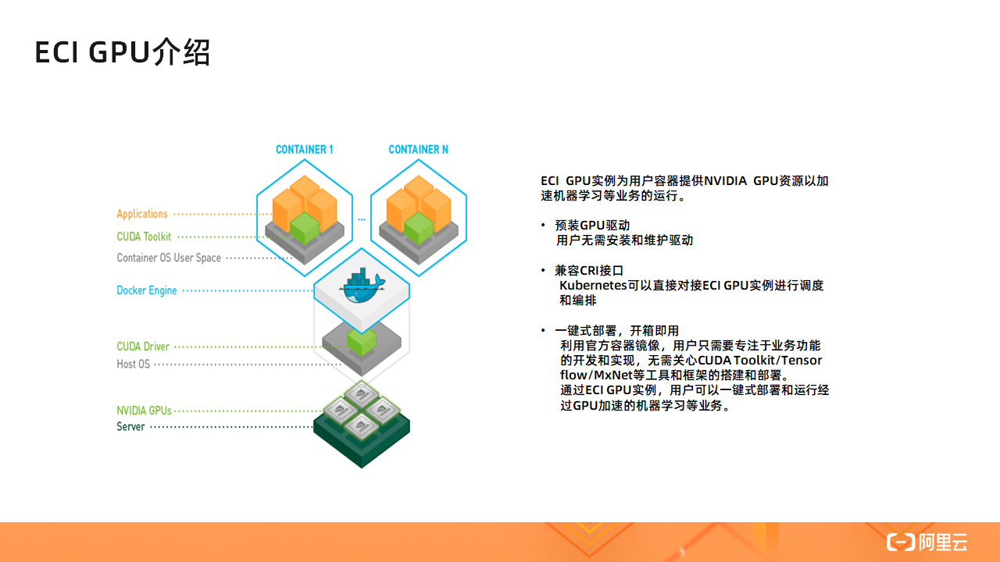
相较于普通的 ECI 实例，ECI GPU 实例为用户容器提供了 GPU 资源以加速机器学习等任务的运行，其典型架构如上图所示。ECI GPU 实例预装了 GPU 驱动，免去了用户安装和维护 GPU 驱动的麻烦。同时，ECI GPU 实例同普通的 ECI 实例一样兼容 CRI 接口，Kubernetes 也可以直接对 ECI GPU 实例进行调度和编排。此外，利用官方容器镜像，用户无需关心 CUDA Toolkit/Tensorflow/PyTorch 等工具和框架的搭建部署，只需要专注于具体业务功能的开发和实现。
通过 ECI GPU 实例，用户可以一键式部署和运行经过 GPU 加速的机器学习等业务，简单方便。
ECI GPU 基本实现原理
大家知道，容器一般是通过内核接口访问主机上的资源。但是对于 GPU 资源，容器无法直接通过内核接口访问到，只能通过厂商驱动与 GPU 进行交互。
那么，ECI GPU 实例是如何让用户容器实例访问到 GPU 资源的呢？本质上，ECI GPU 就是在用户容器创建时将 GPU 驱动的一些必要的动态库文件挂载到用户容器中，从而使得用户容器可以通过这些挂载的动态库文件访问到位于 Host 端的 GPU。

ECI GPU 的基本实现框架如上图所示，图中所有方框代表的组件都运行在 ECI HostOS 侧。其中 ContainerAgent 是自研的一个组件，可以类比与 Kubelet，其接受来自管控的指令；右上角的 nvidia-container-runtime-hook 是 NVIDIA 开源实现的一个符合 OCI 标准的一个 prestart hook，prestart hook 用于在容器执行用户指定的的命令前执行一些自定义配置操作；右侧中间位置的 libnvidia-container 也是一个 NVIDIA 开源的一个组件，用于将 Host 侧 GPU 驱动的动态库挂载到指定容器中。
简单介绍一下 ECI GPU 下的容器启动流程：
- containerd 从 ContainerAgent 中接收来自管控的创建使用 GPU 的容器的命令并将该命令下发给 runc
- runc 创建容器时调用 prestart hook，即 nvidia-container-runtime-hook
- hook 调用 libnvidia-container 将必要的 GPU 驱动动态库，如 libcuda.so、libnvml.so 等文件，挂载到容器上
- 容器创建完成后，用户容器进程通过上述挂载的动态库文件访问并使用 GPU 资源
ECI GPU 使用方式

目前在 ACK/ASK 集群中使用 GPU，只需要在 YAML 文件中指定两个字段即可，如上图标红处所示。
第一个字段是 k8s.aliyun.com/eci-use-specs，该字段用于指定 ECI GPU 实例规格，当前阿里云上可用的 ECI GPU 实例规格已经列在左图的表格中了。
第二个字段是 nvidia.com/gpu，该字段用于指定该容器所要使用的 GPU 数量。注意，spec 中所有容器指定要使用的 GPU 数量总和不能超过 k8s.aliyun.com/eci-use-specs 字段指定的 ECI GPU 实例规格所提供的 GPU 数量，否则容器会创建失败。
演示
视频演示过程请点击【视频课链接】进行学习。
最后简单演示一下如何在 ACK 集群中使用 GPU 加速执行机器学习任务。我们以在 ASK 集群中进行 MNIST（手写数字识别）训练任务为例：

该任务由 YAML 文件定义，如上图所示。我们在 YAML 文件中指定了 ECI GPU 实例类型，该实例类型包含一颗 NVIDIA P4 GPU。然后我们指定了容器镜像为 nvcr.io/nvidia/pytorch，该镜像是由 NVIDIA 提供，内部已经封装好了 CUDA/PyTorch 等工具。最后，我们通过 nvidia.com/gpu 指定了要使用的 GPU 数量为 1。
如上图所示，在 ASK 集群中，我们选择使用模板创建应用实例，然后在模板中输入右侧 YAML 文件的内容，最后点击创建即可创建一个使用 GPU 的容器了。

容器创建完成之后，首先我们通过 kubectl 命令登录到我们创建的容器中，然后执行 nvidia-smi 命令确认 GPU 是否可用。如上图中的左上角截图所示，nvidia-smi 命令成功返回了 GPU 的信息，如 GPU 的型号的 P4，驱动版本号是 418.87.01，CUDA 版本为 10.1 等，这表示了我们创建的容器是可以正常使用 GPU 资源的。
接着，如上图中的右侧截图所示，我们进入 /workspace/examples/mnist 目录下执行 python main.py 开始执行 MNIST 训练任务，MNIST 训练任务会先下载 MNIST 数据集，由于 MNIST 数据集较大可能下载时间会比较长。下载完数据集后，MNIST 训练任务会开始进行数据集的训练。
当 MNIST 任务执行完之后，我们会看到训练结果打印在屏幕上，如上图中左下角截图所示。MNIST 测试集包含 10000 张测试图片，从结果图片我们可以看到其中由 9845 张手写数字图片都被正确识别了，精度已经是相当高。有兴趣的同学可以对比测试一下不使用 GPU 场景下的 MNIST 任务所用的训练时间。
总结
综上所述，ECI GPU 不仅大大加速了用户在云上执行机器学习等任务的执行，并且其免运维免部署的特性使得用户只需要专注于具体业务的实现而不需要关心底层环境的部署，真正做到开箱即用，方便用户的开发。考虑到用户对计算力的需求，未来我们还会有 vGPU 的实例供用户选择，以进一步降低用户成本，敬请期待。
19 基于 Knative 低成本部署在线应用，灵活自动伸缩
为什么需要 Knative
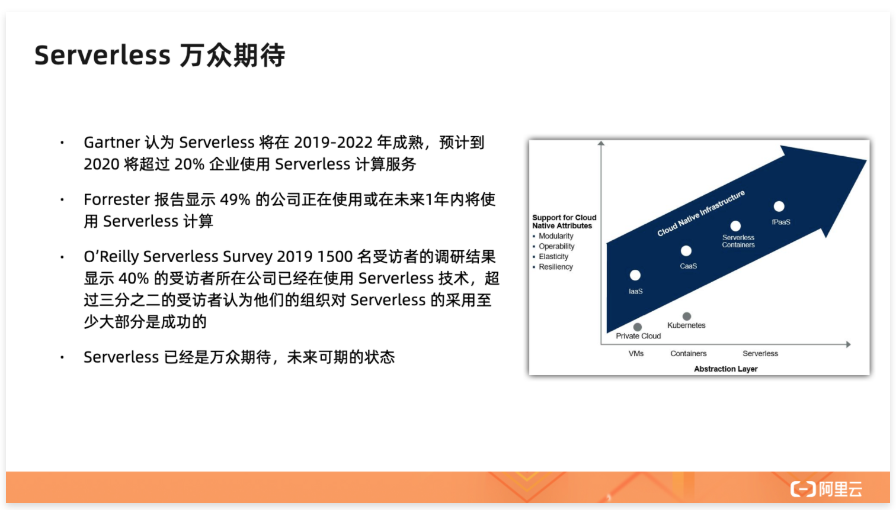
Serverless 已经是万众期待，未来可期的状态。各种调查报告显示企业及开发者已经在使用 Serverless 构建线上服务，而且这个比例还在不断增加。
在这个大趋势下，我们再来看 IaaS 架构的演进方向。最初企业上云都是基于 VM 的方式在使用云资源，企业线上服务都是通过 Ansible、Saltstack、Puppet 或者 Chef 等工具裸部在 VM 中的。直接在 VM 中启动应用，导致线上服务对 VM 的环境配置有很强的依赖，而后伴随着容器技术的崛起，大家开始通过容器的方式在 VM 中部署应用。
但如果有十几个甚至几十个应用需要部署，就需要在成百上千的 VM 快速部署、升级应用，这是一件非常令人头疼的事情。而 Kubernetes 很好地解决了这些问题，所以现在大家开始通过 Kubernetes 方式使用云资源。随着 Kubernetes 的流行，各大云厂商都开始提供 Serverless Kubernetes 服务，用户无需维护 Kubernetes 集群，即可直接通过 Kubernetes 语义使用云的能力。
既然 Kubernetes 已经非常好了，为什么还需要 Knative 呢？要回答这个问题，我们先梳理一下 Serverless 应用都有哪些共同特质：
- 按需使用，自动弹性
按需使用云资源，业务量上涨的时候自动扩容，业务量下降的时候自动缩容，所以需要自动弹性能力。
- 灰度发布
要能支持多版本管理，应用升级的时候可以使用各种灰度发布策略上线新的版本。
- 流量管理
能够管理南北流量，可以按照流量百分比对不同版本进行灰度。
- 负载均衡、服务发现
应用弹性过程中自动增加或者减少实例数量，流量管理需要具备负载均衡和服务发现的功能。
- Gateway
多个应用部署在同一个集群中，需要一个接入层网关对多个应用以及同一个应用的不同版本进行流量的管理。
随着 Kubernetes 和云原生概念的崛起，第一直觉可能是直接在 Kubernetes 之上部署 Serverless 应用。那么，如果要在原生的 Kubernetes 上部署 Serverless 应用我们可能会怎么做？
首先需要一个 Deployment 来管理 Workload，还需要通过 Service 对外暴露服务和实现服务发现的能力。应用有重大变更，新版本发布时可能需要暂停观察，待观察确认没问题之后再继续增加灰度的比例。这时就要使用两个 Deployment 才能做到。
v1 Deployment 代表旧版本，灰度的时候逐一减少实例数；v2 Deployment 代表新版本，灰度的时候逐一增加实例数。hpa 代表弹性能力，每一个 Deployment 都有一个 hpa 管理弹性配置。
这其中其实是有冲突的：假设 v1 Deploymen 原本有三个 pod，灰度的时候升级一个 pod 到 v2，此时其实是 1/3 的流量会打到 v2 版本上。但当业务高峰到来后，因为两个版本都配置了 hpa，所以 v2 和 v1 会同时扩容，最终 v1 和 v2 的 pod 数量就不是最初设置的 1/3 的比例了。
所以传统的这种按照 Deployment 实例数发布的灰度策略和弹性配置天然是冲突的。而如果按照流量比例进行灰度就不会有这个问题，这可能就要引入 Istio 的能力。
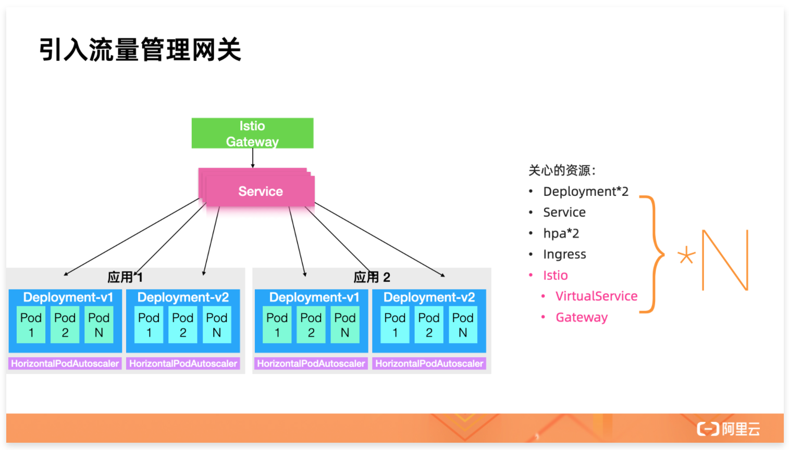
引入 Istio 作为 Gateway 组件，Istio 除了管理同一个应用的流量灰度，还能对不同的应用进行流量管理。看起来很好，但是我们再仔细分析一下存在什么问题。先梳理一下在原生 K8s 之上手动管理 Serverless 应用都需要做什么：
- Deployment
- Service
- HPA
- Ingress
- Istio
- VirtualService
- Gateway
这些资源是每一个应用维护一份，如果是多个应用就要维护多份。这些资源散落在 K8s 内，根本看不出来应用的概念，另外管理起来也非常繁琐。
Serverless 应用需要的是面向应用的管理动作，比如应用托管、升级、回滚、灰度发布、流量管理以及弹性等功能。而 Kubernetes 提供的是 IaaS 的使用抽象。所以 Kubernetes 和 Serverless 应用之间少了一层应用编排的抽象。
而 Knative 就是建立在 Kubernetes 之上的 Serverless 应用编排框架。除了 Knative 以外，社区也有好几款 FaaS 类的编排框架，但这些框架编排出来的应用没有统一的标准，每一个框架都有一套自己的规范，而且和 Kubernetes API 完全不兼容。不兼容的 API 就导致使用难度高、可复制性不强。云原生的一个核心标准就是 Kubernetes 的 API 标准，Knative 管理的 Serverless 应用保持 Kubernetes API 语义不变。和 Kubernetes API 具有良好的兼容性，就是 Knative 的云原生特性所在。
Knative 是什么？
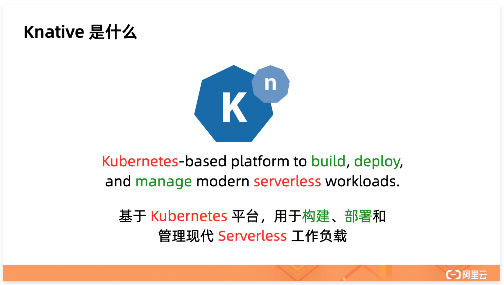
Knative 主要解决的问题就是在 Kubernetes 之上提供通用的 Serverless 编排、调度服务，给上层的 Serverless 应用提供面向应用层的原子操作。并且通过 Kubernetes 原生 API 暴露服务 API，保持和 Kubernetes 生态工具链的完美融合。Knative 有 Eventing 和 Serving 两个核心模块，本文主要介绍 Serving 的核心架构。
Knative Serving 简介

Serving 核心是 Knative Service，Knative Controller 通过 Service 的配置自动操作 Kubernetes Service 和 Deployment，从而实现简化应用管理的目标。
Knative Service 对应一个叫做 Configuration 的资源，每次 Service 变化如果需要创建新的 Workload 就更新 Configuration，然后每次 Configuration 更新都会创建一个唯一的 Revision。Revision 可以认为是 Configuration 的版本管理机制。理论上 Revision 创建完以后是不会修改的。
Route 主要负责 Knative 的流量管理，Knative Route Controller 通过 Route 的配置自动生成 Knative Ingress 配置，Ingress Controller 基于 Ingress 策略实现路由的管理。
Knative Serving 对应用 Workload 的 Serverless 编排是从流量开始的。流量首先达到 Knative 的 Gateway，Gateway 根据 Route 的配置自动把流量根据百分比拆分到不同的 Revision 上，然后每一个 Revision 都有一个自己独立的弹性策略。当过来的流量请求变多时，当前 Revision 就开始自动扩容。每一个 Revision 的扩容策略都是独立的，相互不影响。
基于流量百分比对不同的 Revision 进行灰度，每一个 Revision 都有一个独立的弹性策略。Knative Serving 通过对流量的控制实现了流量管理、弹性和灰度三者的完美结合。接下来具体介绍一下 Knative Serving API 细节。
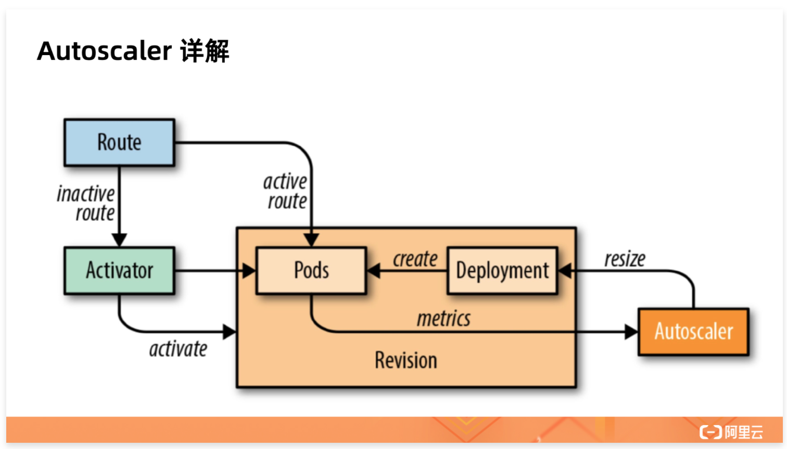
上图展示了 Knative Autoscaler 的工作机制，Route 负责接入流量，Autoscaler 负责做弹性伸缩。当没有业务请求时会缩容到零，缩容到零后 Route 进来的请求会转到 Activator 上。当第一个请求进来之后 Activator 会保持住 http 链接，然后通知 Autoscaler 去做扩容。Autoscaler 把第一个 pod 扩容完成以后 Activator 就把流量转发到 Pod，从而做到了缩容到零也不会损失流量的目的。
到此 Knative Serving 的核心模块和基本原理已经介绍完毕，你应该对 Knative 已经有了初步了解。在介绍原理的过程中你可能也感受到了，要想把 Knative 用起来其实还是需要维护很多 Controller 组件、Gateway 组件（比如 Istio)）的，并且要持续地投入 IaaS 成本和运维成本。
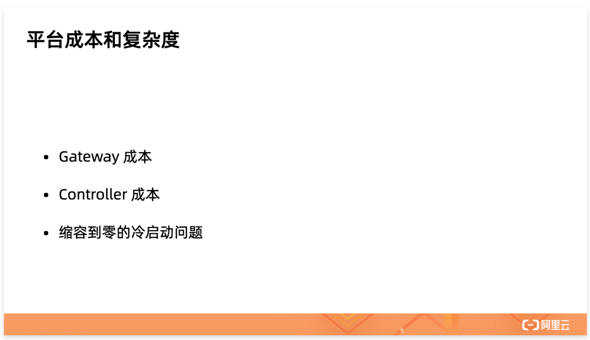
Gateway 组件假设使用 istio 实现的话，Istio 本身就需要十几个 Controller，如果要做高可用可能就需要二十几个 Controller。Knative Serving Controller 全都高可用部署也需要十几个。这些 Controller 的 IaaS 成本和运维成本都比较多。另外冷启动问题也很明显，虽然缩容到零可以降低业务波谷的成本，但是第一批流量也可能会超时。
Knative 和云的完美融合
为了解决上述问题，我们把 Knative 和阿里云做了深度的融合。用户还是按照 Knative 的原生语义使用，但底层的 Controller 、Gateway 都深度嵌入到阿里云体系内。这样既保证了用户可以无厂商锁定风险地以 Knative API 使用云资源，还能享受到阿里云基础设施的已有优势。

首先是 Gateway 和云的融合，直接使用阿里云 SLB 作为 Gateway，使用云产品 SLB 的好处有：
- 云产品级别的支撑，提供 SLA 保障；
- 按需付费，不需要出 IaaS 资源；
- 用户无需承担运维成本，不用考虑高可用问题，云产品自带高可用能力。
除了 Gateway 组件以外，Knative Serving Controller 也需要一定的成本，所以我们把 Knative Serving Controller 和阿里云容器服务也进行了融合。用户只需要拥有一个 Serverless Kubernetes 集群并开通 Knative 功能就可以基于 Knative API 使用云的能力，并且用户无需为 Knative Controller 付出任何成本。
接下来再分析一下冷启动问题。
传统应用在没开启弹性配置的时候实例数是固定的，Knative 管理的 Serverless 应用默认就有弹性策略，在没有流量的时候会缩容到零。传统应用在流量低谷时即便没有业务请求处理，实例数还保持不变，这其实是浪费资源的。但好处就是请求不会超时，什么时候过来的请求都可以会很好地处理。而如果缩容到零，第一个请求到达以后才会触发扩容的过程。
Knative 的模型中从 0 到 1 扩容需要 5 个步骤串行进行，这 5 个步骤都完成以后才能开始处理第一个请求，而此时往往都会超时。所以 Knative 缩容到零虽然降低了常驻资源的成本，但第一批请求的冷启动问题也非常明显。可见弹性其实就是在寻找成本和效率的一个平衡点。
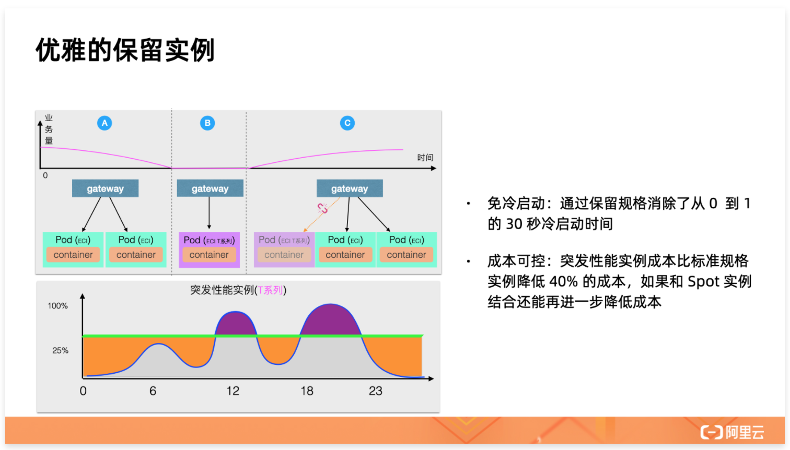
为了解决第一个实例的冷启动问题，我们推出了保留实例功能。保留实例是阿里云容器服务 Knative 独有的功能。社区的 Knative 默认在没有流量时缩容到零，但是缩容到零之后从 0 到 1 的冷启动问题很难解决。冷启动除了要解决 IaaS 资源的分配、Kubernetes 的调度、拉镜像等问题以外，还涉及到应用的启动时长。应用启动时长从毫秒到分钟级别都有。应用启动时间完全是业务行为，在底层平台层面几乎无法控制。
ASK Knative 对这个问题的解法是通过低价格的保留实例，来平衡成本和冷启动问题。阿里云 ECI 有很多规格，不同规格的计算能力不一样，价格也不一样。如下所示是对 2c4G 配置的计算型实例和突发性能型实例的价格对比。
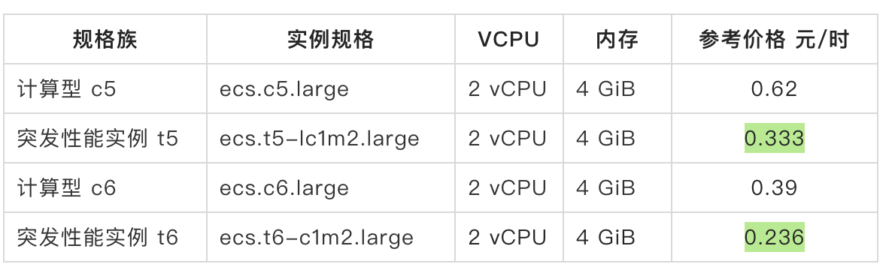
通过上图可知突发性能实例比计算型便宜 46%，可见如果在没有流量时，使用突发性能实例提供服务不单单解决了冷启动的问题，还能节省很多成本。
突发性能实例除了价格优势以外，还有一个非常亮眼的功能就是 CPU 积分。突发性能实例可以利用 CPU 积分应对突发性能需求。突发性能实例可以持续获得 CPU 积分，在性能无法满足负载要求时，可以通过消耗积累的 CPU 积分无缝提高计算性能，不会影响部署在实例上的环境和应用。通过 CPU 积分，您可以从整体业务角度分配计算资源，将业务平峰期剩余的计算能力无缝转移到高峰期使用（简单的理解就是油电混动）。突发性能实例的更多细节参见这里。
所以 ASK Knative 的策略是在业务波谷时使用突发性能实例替换标准的计算型实例，当第一个请求来临时再无缝切换到标准的计算型实例。这样可以降低流量低谷的成本，并且在低谷时获得的 CPU 积分，还能在业务高峰到来时消费掉，用户支付的每一分钱都不会浪费。
使用突发性能实例作为保留实例只是默认策略，用户可以指定自己期望的其他类型实例作为保留实例的规格。当然用户也可以指定最小保留一个标准实例，从而关闭保留实例的功能。
总结
Knative 是 Kubernetes 生态最流行的 Serverless 编排框架。社区原生的 Knative 需要常驻的 Controller 和常驻的网关才能提供服务。这些常驻实例除了需要支付 IaaS 成本以外还带来了很多运维负担，给应用的 Serverless 化带来了一定的难度，因此我们在 ASK 中完全托管了 Knative Serving，开箱即用极致的 Serverless 体验。
20 快速构建 JenkinsGitlab 持续集成环境
ASK 介绍

首先，ASK 是什么？ASK 是阿里云推出的无服务器版 Kubernetes 容器服务。与传统的 Kubernetes 服务相比，ASK最大的特点就是通过虚拟节点接入 Kubernetes 集群，而 Kubernetes 的 Master 节点也完全由阿里云容器服务托管。因此，在整个 ASK 集群中，用户无需管理和运维真实节点，只用关心 Pod 资源即可，ASK 中的 Pod 则由阿里云弹性容器实例 ECI 承载。
ASK 的优势主要有以下几点：
- 降低用户使用 Kubernetes 的门槛，无需管理 Node 节点；
- 无需考虑节点的容量规划；
- 以 Pod 为单位按需计费；
- 宕机故障影响面小，Pod 级别。
同时，ASK 主要适用的场景有：
- 在线业务弹性（视频直播、在线教育）；
- 大数据计算（Spark）；
- 定时任务；
- CI/CD 持续集成。
GitLab CI on ASK 的优势
说到 CI/CD，大家最熟悉的两个工具，一个是 Jenkins，另一个是 GitLab CI，随着 Devops 角色的流行，越来越多的企业采用 GitLab CI 作为持续集成的工具，下面给大家介绍下 GitLab CI on ASK。gitlab-runner 以 Pod 形式注册到 ASK 集群中，每个 CI/CD stage 也对应一个 Pod。

这么做的优势有以下几点：
- 服务高可用（Deployment+PVC）；
- 无需维护 K8s Master、Node 节点，在没有任何构建任务的情况下，只需要运行一个 Pod（gitlab-runner）；
- 触发一个构建任务，启动一个 Pod，按需计费；
- 宕机故障只会影响以 Pod 为单位。
实践演示
接下来给大家演示如何在阿里云 ASK 集群上部署 gitlab-runner，并且通过 gitlab CICD Pipeline 部署 Java 应用到 ASK 集群中。
其中涉及到的知识点主要有：
- 通过 configMap 保存 gitlab runner 和 executor 的配置；
- 通过 secret 保存 ASK 集群的访问凭证和镜像仓库的密钥；
- 通过 PVC 缓存 runner cache 和 maven 仓库；
- 通过 imageCache 缓存容器镜像。
本节课程涉及到的所有的配置文件（yaml）都已经上传到 github 供大家下载【下载链接】。
下面开始演示，视频版课程请点击【观看链接】。
1. 准备 ASK 集群
- 在【容器服务控制台】创建标准 Serverless K8s 集群

- 集群创建完成后，基本信息中有 API server 公网链接地址

- 连接信息中有 ASK 集群访问凭证

2. 准备 PV/PVC
准备两个 nas 盘，一个做 gitlab runner cache，一个做 maven 仓库，请自行替换 nas server 地址和 path
kubectl apply -f mvn-pv.yaml
kubectl apply -f mvn-pvc.yaml
kubectl apply -f nas-pv.yaml
kubectl apply -f nas-pvc.yaml
3. 准备 Secret
- kubeconfig 里的证书公私钥拷贝到 secret 中，secret.yaml
kubectl apply -f secret.yaml
- docker-registry 的认证信息，ECI 支持免密拉取，但是 push docker image 还是要用到
kubectl create secret docker-registry registry-auth-secret --docker-server=registry.cn-hangzhou.aliyuncs.com --docker-username=${xxx} --docker-password=${xxx}
- 查看生成的 secret 可以用以下命令
kubectl get secret registry-auth-secret --output=yaml
4. 准备 ConfigMap
把 gitlab runner 的 url、token，ASK 集群的 api server 地址拷贝到 config.yaml
kubectl apply -f config-map.yaml
5. 准备 imageCache（可选，节省镜像拉取时间）
目前 AS K默认安装了 imagecache-crd，可以用以下命令查询，如果没有可以自己安装
# 查看image cache crd 是否安转
kubectl get crd
# 安装image cache crd
kubectl apply -f imagecache-crd.yaml
# 制作imagecache
kubectl apply -f imagecache.yaml
6. 部署 gitlab runner
kubectl apply -f gitlab-runner-deployment.yaml
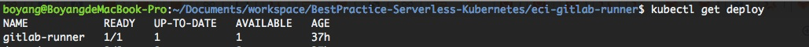
7. 进行一个简单的 CI 任务

git repo 中的 .gitlab-ci.yml 类似 Jenkinsfile，定义了构建任务的工作流。我们修改 demo 项目中的 src/main/webapp/index.jsp 文件，然后 git commit -m "change index info" 提交。 gitlab 中的流水线任务即被触发，整个流程涉及到编译、打包、部署。

成本
使用 ASK 与一台预付费 ECS 的成本对比：

从上述成本计算可以看出，当您每天的 CI/CD 任务少于 126 个时，使用 ASK+ECI 会比购买一台包年包月的 ECS 更加划算。在享受按需付费的同时，也降低了运维成本，更加重要的是，当业务规模扩大、CI/CD 任务数量陡增时，不再需要担心 Node 节点的扩容。ASK+ECI 的方案，可以被认为是 CI/CD 持续集成场景的量身标配。
21 在线应用的 Serverless 实践
Serverless 落地企业级应用的挑战
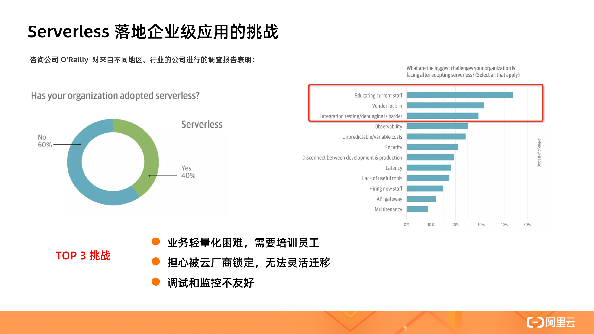
Serverless 技术是继虚拟机、容器之后的第三代通用计算技术。相对于传统后台架构，Serverless 具有免运维、省成本、快速部署交付、灵活弹性等优点，近年来获得越来越多企业和开发者的关注和青睐。但对于企业级应用落地来说，仍存在一些挑战。
根据咨询公司 O ‘Reilly 2019 年底的一份统计报告表明：已有 40% 的组织正在使用 Serverless 技术，剩下的 60% 中认为最大的 TOP 3 挑战是：
- 开发难度和入门门槛高，业务轻量化困难，不能平滑地迁移现有应用 ；
- 担心被云厂商锁定，如 FaaS 形态的 Serverless 产品，每个厂商都希望推出自己的标准，缺乏开源的规范和开源的生态支持。相似的一幕曾经在容器领域上演，直到后来 Kubernetes 成为事实标准，Serverless 还在寻找自己的事实标准；
- 如何方便地本地开发调试、监控，和现有业务做深度整合。
SAE 产品介绍
那么摆在 Serverless 技术落地面前的三座大山该如何解决呢？给大家分享一款低门槛，无需任何代码改造就能直接使用的 Serverless PaaS 平台（SAE），是企业在线业务平滑上云的最佳选择。
SAE 提供了成本更优、效率更高的应用托管方案。底层基于统一的 K8s 技术底座，帮用户屏蔽复杂的 IaaS 层和 K8s 集群运维，提供计算资源、弹性、隔离性等能力，用户只需关心应用实例的规格和实例数。
在应用层，除提供了生命周期管理、多发布策略外，还提供监控、日志、微服务治理能力，解决应用可观测性和治理需求。同时提供一键启停、应用编排等高级能力，进一步提效和降本。核心场景主要面向在线应用：微服务应用、Web 应用、多语言应用等。
在开发者工具方面，和 CI/CD 工具做了良好的集成，无论是 Jenkins 还是云效，都能直接部署应用到 SAE，也可以通过 Cloud Toolkit 插件工具实现本地一键部署应用到云端，可以说 SAE 覆盖了应用上云的完整场景。

SAE 除了 Serverless 体验本身所带来的极致弹性、免运维、省成本等特性之外，重点在应用层给用户提供了全栈的能力，包括对微服务的增强支持，以及整合了和应用息息相关能力，包括配置、监控、日志、流量控制等。再加上用户零代码的改造，这也是 SAE 区别其它 Serveless 产品的重要优势，平滑迁移企业在线应用。
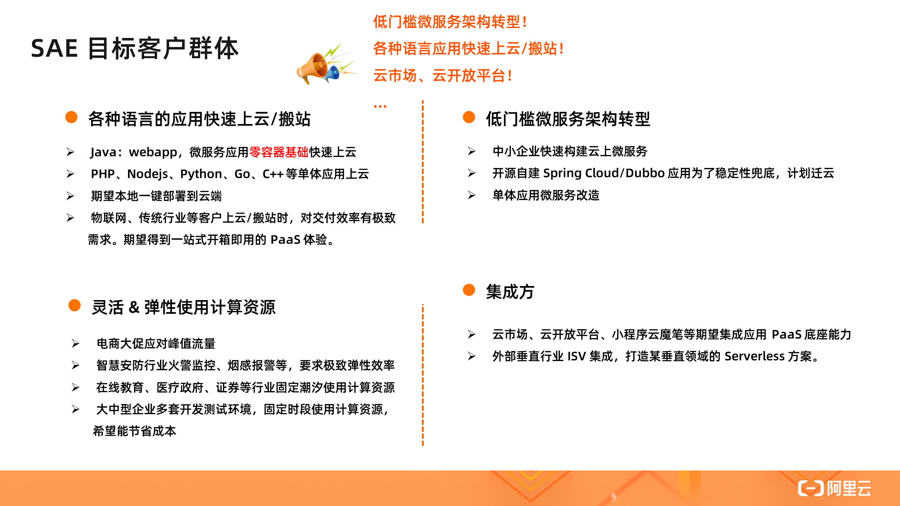
SAE 有几个典型的使用场景：一个是存量业务上云，特别是微服务、Java 应用，同时也支持其他语言的单体应用快速上云/搬站，满足极致交付效率和开箱即用的一站式体验。在行业方面，SAE 特别适合有比较大的流量波动的在线业务，比如电商大促、在线教育等行业的场景。另外 SAE 作为应用 PaaS 也可以被上层的行业 SaaS 所集成，帮助用户更快地构建行业 SaaS。
产品核心指标

SAE 三个核心的指标：容器启动时长 20s（指标定义是从 pull image 到容器启动的耗时，不包括应用启动时间），接下来我们会通过各种技术优化把它优化到 5s 内，保证用户在突发场景下的快速扩容效率。最小规格支持 0.5core 1GiB，满足更细粒度的资源诉求。相比 ECS，SAE 部署一套开发测试环境的成本可以节省 47%～57%。
最佳实践
通过前文介绍， 我们了解了产品的特性、优势、适用场景，最后给大家详细介绍几个 Serverless 落地的最佳实践案例。
1. 低门槛微服务架构转型的解决方案


随着业务的快速增长，很多企业都面临单体向微服务架构改造转型的难题，或者开源自建的微服务框架（Spring Cloud / Dubbo）能力不再能满足企业稳定性和多样化的需求。通过 SAE 提供开箱即用的微服务能力和稳定性兜底能力，已让这些企业低门槛快速完成微服务架构转型，支撑新业务快速上线，让企业专注于业务本身。
可以说，SAE 是 Serverless 行业最佳的微服务实践，同时也是微服务行业最佳的 Serverless 实践。
2. 免运维、一键启停开发测试环境的降本方案

中大型企业多套环境，往往开发测试、预发环境都不是 7*24 小时使用，长期保有应用实例，闲置浪费很高，有些企业 CPU 利用率都快接近 0，降本诉求明显。通过 SAE 一键启停能力，让这些企业得以灵活按需释放资源，只开发测试环境就能节省 2/3 的机器成本，非常可观。
3. 精准容量、极致弹性的解决方案


电商类、安防行业等往往会有一些不可预期的突发流量高峰，之前他们都是提前预估峰值，按照峰值保有 ECS 资源，但经常出现容量预估不准（资源浪费 or 不足），更严重的甚至会影响系统的 SLA。
采用压测工具 + SAE 的方案后，根据压测结果精准设置弹性策略期望值，然后和实时的监控指标比对，系统自动进行扩缩操作，再也无需容量规划，并且弹性效率能做到秒级，轻松应对峰值大考。
4. 构建高效闭环的 DevOps 体系

SAE 构建了高效闭环的 DevOps 体系，覆盖了应用的开发态、部署态、运维态的整个过程。中大型企业往往都使用企业级 CI/CD 工具 Jenkis / 云效部署 SAE 应用，完成从 Source Code - 构建 - 部署全链路。中小企业/个人开发者往往选择开发者工具 Maven 插件、IDEA 插件一键部署应用到云端，方便本地调试，提升开发者体验。完成部署后，即可进行运维态的治理和诊断，如限流降级、应用诊断，数据化运营分析等。
总结
总结一下，本文主要是围绕在线应用的 Serverless 落地实践展开的。开篇提到的几个落地挑战在 SAE 产品中基本都能得到很好的解决：
- 不用修改编程模型，零代码改造，对开发者来说零门槛平滑迁移企业存量应用；
- 底座基于 K8s（容器界的事实标准），上层提供的应用层全栈能力对用户零侵入，因此不用担心厂商锁定问题，而是让用户更关注应用视角，获得一站式 PaaS 层的体验；
- 调试、监控、可观测性方面，SAE 和开发者工具做了良好的集成打通，接下来会越来越逼近开发者熟知的 ECS 运维体验。总体来讲，SAE 是企业在线业务平滑上云的最佳选择。
22 通过 IDEMaven 部署 Serverless 应用实践
SAE 应用部署方式
1. SAE 概述

首先，简单介绍一下 SAE。SAE 是一款面向应用的 Serverless PaaS 平台，支持 Spring Cloud、Dubbo、HSF 等主流开发框架，用户可以零代码改造直接将应用部署到 SAE，并且按需使用、按量计费、秒级弹性。SAE 充分发挥 Serverless 的优势，为用户节省闲置资源成本；在体验上，SAE 采用全托管、免运维的方式，用户只需聚焦核心业务的开发，而应用生命周期管理、微服务管理、日志、监控等功能交由 SAE 完成。
2. SAE 应用部署方式

在使用 SAE 时，您可以在控制台上看到 SAE 支持三种部署方式，即可以通过 WAR 包、JAR 包和镜像的方式进行部署，如果您采用 Spring Cloud、Dubbo、HSF 这类应用，可以直接打包上传，或者填入包的地址便可以部署到 SAE 上；对于非 Java 语言的场景，您也可以使用镜像直接来部署，后续我们也会支持其他语言直接上传包的形式进行部署。
SAE 除上述控制台界面部署的方式之外，还支持通过 Maven 插件或者 IDE 插件的方式进行部署，这样您无需登录控制台，就可以执行自动化部署操作，同时可以集成如云效、Jenkins 等工具实现 CICD 流程。
Maven 插件部署
如何使用 Maven 插件进行部署？首先需要为应用添加 Maven 依赖 toolkit-maven-plugin，接下来需要编写配置文件来配置插件的具体行为，这里定义了三个配置文件：
- toolkit_profile.yaml 账号配置文件，用来配置阿里云 ak、sk 来标识阿里云用户，这里推荐使用子账号 ak、sk 以降低安全风险。
- toolkit_package.yaml 打包配置文件，用来声明部署应用的类型，可以选择 war、jar、url 以及镜像的方式来进行部署，若采用 war、jar 的方式，则会将当前应用进行打包上传，而 url 或者镜像的方式则要显示的填写对应的包地址或者镜像地址进行部署。
- toolkit_deploy.yaml 部署配置，即可以配置该应用的环境变量、启动参数、健康检查等内容，这与控制台上的配置选项是一致的。
这三个文件都有对应的模板，具体的模板选项可以查看产品文档，接下来通过运行 Maven 打包部署命令 mvn clean package toolkit:deploy 即可自动化部署到 SAE 上。
IDE 插件部署
再看一下如何通过您的 IDE 直接进行部署，这个是借助 Alibaba Cloud Toolkit IDE 插件的能力，它可以在主流的 Java IDE IDEA 和 Eclipse 上面安装，这里以 IDEA 为例，您可以在 IDEA 插件市场中搜索并安装。之后重启 IDEA 后即可看到 Cloud Toolkit 的选项。下面我们要做的配置和刚才的 Maven 插件部署的配置比较类似，先要配置阿里云账号信息，即 ak、sk。接下来选择部署到 SAE 这个选项，里面有多种部署方式：Maven 打包、上传文件、镜像，同时在高级选项中可以配置应用的环境变量、启动参数、健康检查等内容。
总结
相信您通过本文已经了解了 SAE 的几种部署方式和基本使用，在这里也推荐您选用 SAE，在不改变当前开发运维方式的同时，享受 Serverless 技术带来的价值。
相关文档：
通过 Maven 插件自动部署应用 通过 IntelliJ IDEA 插件部署应用 通过 Eclipse 插件一键部署应用
课程推荐
为了更多开发者能够享受到 Serverless 带来的红利，这一次，我们集结了 10+ 位阿里巴巴 Serverless 领域技术专家，打造出最适合开发者入门的 Serverless 公开课，让你即学即用，轻松拥抱云计算的新范式——Serverless。
点击即可免费观看课程：https://developer.aliyun.com/learning/roadmap/serverless
23 企业级 CICD 工具部署 Serverless 应用的落地实践
背景知识
通过以往几节课程的学习，相信大家对于 SAE 平台已经有了一定的了解。SAE 为客户免除了很多复杂的运维工作，开箱即用、按用量付费；与此同时 SAE 提供了丰富的 Open API，可以很容易地与其他平台做集成；类似云效以及 Jenkins 的 CI/CD 工具是敏捷软件研发实践中的重要一环，可以自动化地将客户的代码编译、测试、打包并部署至各个环境，从而提升团队的研发效率。
本篇文章分为两个部分，首先介绍使用云效平台实现从源码到 SAE 环境的持续集成，然后介绍使用 Jenkins 的情况下持续集成该如何配置。
使用云效部署到 SAE
云效（rdc.console.aliyun.com），是阿里云推出的企业级一站式 Devops 平台型产品，功能覆盖了从【需求->开发->测试->发布->运维->运营】全流程。对云效感兴趣的同学可以去【阿里云官网】搜索【云效】，本文只介绍与 CI/CD 相关的部分功能。
如上图所示，图的上半部分是我们的配置流程，下半部分的流程图是我们所要执行的持续集成流程的示例。云效首先会从代码仓库中拉取相应的代码，然后进行代码检查以及单元测试，接着是代码编译构建，这一步会产出相应的生成物：在这里我们用一个 java 应用来举例，如果构建产出物这一步选择是 jar 类型，那么流水线在运行时运行 mvn package 命令产出对应的 jar 包；如果构建产出物类型是 Docker 镜像，那么在构建这一步在产出 jar 包后会继续执行 docker build 命令来构建对应的 Docker 镜像并上传到您所选择的 ACR 镜像仓库；流水线的最后两步是调用 SAE 的 Open API 将构建物（jar 包/Docker 镜像）部署分发到测试环境，根据我们预先的设置，在部署完测试环境这一步后流水线会停下来等待手动触发下一步操作；等待手动验证测试环境的部署一切正常后，手动触发流水线继续运行，这次将调用 Open API 部署到生产环境。
操作步骤：
- 首先确定代码的编译打包配置都正确，在本地可以正常地编译打包成功，如果是镜像方式部署，那么会要求项目根目录下有对应的Dockerfile配置；
- 在 SAE 控制台中创建相应的应用，请注意如果有多环境部署需求，比如部署到 test（测试）、product（生产） 环境，请先创建对应的 test 命名空间 以及 product 命名空间 并在 命名空间 中创建应用；
- 在云效中做好相应的配置，包括源码仓库配置及流水线配置，具体配置细节请参考相应的产品帮助文档；
- 最后一步点击“运行”触发流水线执行编译部署；
使用 Jenkins 部署 SAE
Jenkins 是被业界广泛使用的开源 CI/CD 平台，使用 Jenkins 可以将源码打包编译后部署至 SAE，其达成的最终效果与“通过云产品云效部署至SAE”类似，通过 Jenkins 将应用源码编译成为 jar 包，然后通过maven plugin 来调用 SAE 的 Open API 部署接口将应用部署至 SAE。
操作步骤：
- 代码库中有相应的打包配置，在使用 Jenkins 时我们打包的产出构建物是 jar 包，所以此处要求我们项目根目录下有对应的 maven配置文件 pom.xml；
- 在部署之前需要在 SAE 平台中创建相应的命令空间、应用，并通过初始化部署来完成应用配置；
- 在 Jenkins 中完成相应Docker插件的配置，同时需要在 Jenkins 中创建并配置相应的 Project；Project可以配置成手动触发或者配置成提交代码时触发编译及部署，具体配置请参考对应的产品帮助文档；
部署过程演示，请点击链接观看：https://developer.aliyun.com/lesson202619006
总结
看到这里，相信大家已经学会了如何使用 CICD 工具将源码非常轻松地部署至 SAE 平台，希望持续集成平台与 SAE 这个可以提升研发效能的组合，帮助您的业务快速起飞！
课程推荐
为了更多开发者能够享受到 Serverless 带来的红利，这一次，我们集结了 10+ 位阿里巴巴 Serverless 领域技术专家，打造出最适合开发者入门的 Serverless 公开课，让你即学即用，轻松拥抱云计算的新范式——Serverless。
点击即可免费观看课程：https://developer.aliyun.com/learning/roadmap/serverless
24 Serverless 应用如何管理日志&持久化数据
实时日志
首先，SAE 支持查看应用实例分组下各个 Pod 的实时日志。当应用出现异常情况时，可以通过查看 Pod 的实时日志定位问题。当应用运行时，可以在【控制台 - 日志管理菜单下 - 实时日志子菜单】方便地看到应用实例的实时日志。
文件日志
SAE 将业务文件日志（不包含 stdout 和 stderr 日志）收集并输入 SLS 中，实现无限制行数查看日志、自行聚合分析日志，方便业务日志对接，并按日志使用量计费。
您可以在部署应用时配置日志收集服务，填入需要采集的日志源，对于滚动日志的场景，可以填入通配符进行解决。
当配置完成后，可以在【控制台 - 日志管理菜单 - 文件日志子菜单】方便地看到采集的文件日志。
NAS 持久化存储
由于存储在容器中数据是非持久化的，SAE 支持了 NAS 存储功能，解决了应用实例数据持久化和实例间多读共享数据的问题。
您可以通过部署应用来配置持久化存储，选择创建好的 NAS，并填入容器中对应的挂载路径即可。
当配置完成后，可以通过 cat /proc/mount | grep nfs 命令查看是否挂载成功，或者可以准备 2 个应用实例，A 和 B，分别挂载 NAS。对 A 执行写入命令 echo "hello" > tmp.txt，对 B 执行读取命令 cat tmp.txt。如果 B 中能够读取到在 A 中写入的 hello，表示 NAS 挂载成功。
25 Serverless 应用引擎产品的流量负载均衡和路由策略配置实践
流量管理从面向实例到面向应用

在 Serverless 场景下，由于弹性能力以及底层计算实例易变的特性，后端应用实例需要频繁上下线，传统的 ECS 场景下的负载均衡管理方式不再适用。
SAE 产品提供给用户面向应用的流量管理方式，不再需要关心弹性场景以及发布场景的实例上下线，仅仅需要关心监听的配置以及应用实例的健康检查探针，将面向实例的复杂配置工作交给 SAE 产品。
单应用的负载均衡配置
对于单个应用，SAE 产品支持将应用服务通过公网或私网 SLB 实例监听暴露，目前支持仅支持 TCP 协议。考虑到传统的 HTTP 类型应用存在 HTTPS 改造的需求，SAE 还支持配置 HTTPS 监听，让 HTTP 服务器无需修改就能够对外提供 HTTPS 服务。
公网 SLB 用于互联网客户端访问，会同时产生规格费与流量费用；私网 SLB 用于 VPC 内客户端访问，会产生规格费用。
为了让 SAE 产品能够准确控制实例上下线时机，用户需要在部署时正确地配置探针，避免业务出现损失。
多应用的路由策略配置

大中型企业在实践中，常常会将业务拆分成不同的应用或者服务，例如将登陆服务、账单服务等关联度较高的部分，单独拆分为应用，独立进行研发以及运维，再对外通过统一的网关服务进行暴露，对用户来说就像使用单体应用一样。
SAE 提供基于 SLB 实例的网关，将流量按照域名以及 HTTP Path 转发到不同的应用的实例上，从功能上对标业界的 Nginx 网关。
公网 SLB 实例实现的网关用于互联网客户端访问，会同时产生规格费与流量费用；私网 SLB 实例实现的网关用于 VPC 内客户端访问，会产生规格费用。
自建微服务网关
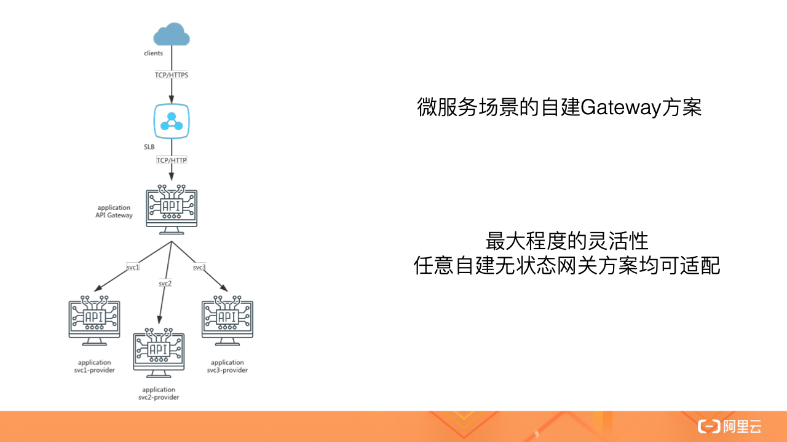
对于微服务场景中常见的微服务网关，SAE 并没有提供产品化的支持，但用户依然可以自由发挥，在 SAE 中部署自建的微服务网关。
实践中，微服务网关也可以作为一个应用，部署到 SAE 中。微服务网关会根据用户自定义的配置，将业务流量转发到提供微服务的实例中。微服务网关作为应用，也是可以通过 SLB 实例对公网以及私网暴露服务。
结语
不管是传统的单应用场景，还是拆分后的多应用场景，以及现在比较流行的微服务场景，在流量管理以及路由策略上，SAE 产品都提供了完整的解决方案，依赖可靠的云产品提供基础网络设施，并尽可能地降低用户的使用成本。用户只需要极低的学习成本，即可在 SAE 控制台白屏化管理自己的流量，或者部署自建的网关应用。
实操演示
演示内容（点击可查看参考文档）：
演示内容请点击视频课观看：https://developer.aliyun.com/lesson202619007
26 Spring CloudDubbo 应用无缝迁移到 Serverless 架构
背景
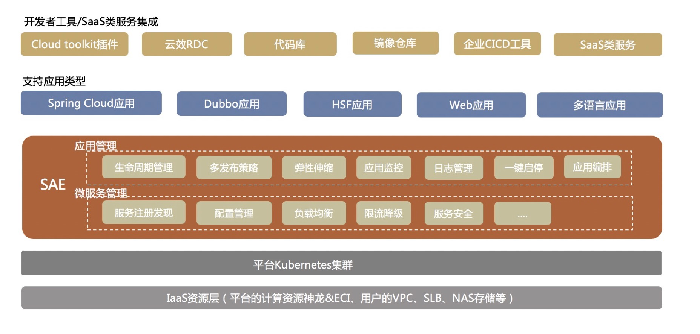
通过前面几节课程的学习，相信大家对于 SAE 平台已经有了一定的了解，SAE 基于 IaaS 层资源构建的一款 Serverles 应用托管产品，免除了客户很多复杂的运维工作，开箱即用、按用量付费；并且提供了丰富的 Open API 可以很容易地与其他平台做集成。
本文将为大家介绍 SAE 在微服务方面的一些能力，SAE 产品把 Serverless 技术和微服务做了很好的结合，天然支持 Java 微服务应用的托管和服务治理，对 SpringCloud/Dubbo 微服务应用能够在只修改配置和依赖，不修改代码的情况下迁移到 SAE 上，并提供服务治理能力，比如基于租户的微服务隔离环境、服务列表、无损下线、离群摘除、应用监控以及调用链分析等。
本次课程分为三部分来介绍，分别介绍微服务应用迁移到 SAE 的优势，如何迁移 SpringCloud/Dubbo 应用到 SAE 上，以及针对 SpringCloud 应用迁移的实践演示。
迁移到 SAE 的优势
在介绍迁移之前，先介绍下 SpringCloud/Dubbo 应用迁移到 SAE 的优势：
- **SAE 内置注册中心：**所有用户共享注册中心组件，SAE 帮助用户运维，这就节省了用户的部署、运维成本；在服务注册和发现的过程中进行链路加密，无需担心被未授权的服务发现。
- **服务治理：**SAE 有命名空间的概念，是基于微服务租户的逻辑隔离环境，用户可以使用不同的命名空间来隔离微服务的注册、发现和调用，提供无损下线、离群摘除和限流降级等服务治理能力。
- **应用监控：**SAE 针对微服务应用提供主机监控、异常栈分析以及分布式调用链路分析等能力，可以提升微服务应用的可观测性和诊断能力。
- **零代码改造：**简单接入就可以享受免运维体验。
SpringCloud/Dubbo 迁移方案
那如何迁移 SpringCloud/Dubbo 应用到 SAE 呢？我们只需要修改添加依赖和配置，就可以把应用部署到 SAE 上。

Dubbo 应用需要添加 dubbo-register-nacos 和 nacos-client 依赖；SpringCloud 应用需要添加 spring-cloud-starter-alibaba-nacos-discovery 即可。
SpringCloud/Dubbo 应用迁移实战
Spring Cloud 提供了简化应用开发的一系列标准和规范。
目前业界流行的 Spring Cloud 具体实现有 Spring Cloud Netflix、Spring Cloud Consul、Spring Cloud Gateway 和 Spring Cloud Alibaba 等。
如果您熟悉 Spring Cloud 中的 Eureka、Consul 和 ZooKeeper 等服务注册组件，但未使用过 Spring Cloud Alibaba 的服务注册组件 Nacos Discovery，那么您仅需将服务注册组件的服务依赖关系和服务配置替换成 Spring Cloud Alibaba Nacos Discovery，无需修改任何代码。
Spring Cloud Alibaba Nacos Discovery 同样实现了 Spring Cloud Registry 的标准接口与规范，与您之前使用 Spring Cloud 接入服务注册与发现的方式基本一致。

接下来针对 SpringCloud 应用迁移过程进行演示，演示过程请点击视频课：https://developer.aliyun.com/lesson202619003 进行观看。
27 SAE 应用分批发布与无损下线的最佳实践
应用发布、服务升级一直是一个让开发和运维同学既兴奋又担心的事情。
兴奋的是有新功能上线，自己的产品可以对用户提供更多的能力和价值；担心的是上线的过程会不会出现意外情况影响业务的稳定性。确实，在应用发布和服务升级时，线上问题出现的可能性更高，本文我们将结合 Serverless 应用引擎（以下简称 SAE）就 Serverless 架构下，讨论如何保障上线过程中服务的优雅下线。
在平时的发布过程中，我们是否遇到过以下问题：
- 发布过程中，出现正在执行的请求被中断？
- 下游服务节点已经下线，上游依然继续调用已经下线的节点导致请求报错，进而导致业务异常？
- 发布过程造成数据不一致，需要对脏数据进行修复。
有时候，我们把发版安排在凌晨两三点，赶在业务流量比较小的时候，心惊胆颤、睡眠不足、苦不堪言。那如何解决上面的问题，如何保证应用发布过程稳定、高效，保证业务无损呢？首先，我们来梳理下造成这些问题的原因。
场景分析

上图描述了我们使用微服务架构开发应用的一个常见场景，我们先看下这个场景的服务调用关系：
- 服务 B、C 把服务注册到注册中心，服务 A、B 从注册中心发现需要调用的服务；
- 业务流量从负载均衡打到服务 A，在 SLB 上配置服务 A 实例的健康检查，当服务 A 有实例停机的时候，相应的实例从 SLB 摘掉；服务 A 调用服务 B，服务 B 再调用服务 C；
图中有两类流量，南北向流量（即通过 SLB 转发到后端服务器的业务流量，如业务流量 -> SLB -> A 的调用路径）和东西向流量（通过注册中心服务中心服务发现来调用的流量，如 A -> B 的调用路径），下面针对这两类流量分别进行分析。
南北向流量
南北向流量存在问题
当服务 A 发布的时候，服务 A1 实例停机后，SLB 根据健康检查探测到服务 A1 下线，然后把实例从 SLB 摘掉。实例 A1 依赖 SLB 的健康检查从 SLB 上摘掉，一般需要几秒到十几秒的时间，在这个过程中，如果 SLB 有持续的流量打入，就会造成一些请求继续路由到实例 A1，导致请求失败；
服务 A 在发布的过程中，如何保证经过 SLB 的流量不报错？我们接着看下 SAE 是如何做的。
南北向流量优雅升级方案

如上文所提，请求失败的原因在于后端服务实例先停止掉，然后才从 SLB 摘掉，那我们是不是可以先从 SLB 摘掉服务实例，然后再对实例进行升级呢？
按照这个思路，SAE 基于 K8S service 的能力给出了一种方案，当用户在通过 SAE 为应用绑定 SLB 时，SAE 会在集群中创建一个 service 资源，并把应用的实例和 service 关联，CCM 组件会负责 SLB 的购买、SLB 虚拟服务器组的创建，并且把应用实例关联的 ENI 网卡添加到虚拟服务器组中，用户可以通过 SLB 来访问应用实例；当应用发布时，CCM 会先把实例对应的 ENI 从虚拟服务器组中摘除，然后再对实例进行升级，从而保证流量不丢失。
这就是 SAE 对于应用升级过程中关于南北向流量的保障方案。
东西向流量
东西向流量存在问题
在讨论完南北向流量的解决方案后，我们再看下东西向流量，传统的发布流程中，服务提供者停止再启动，服务消费者感知到服务提供者节点停止的流程如下：

- 服务发布前，消费者根据负载均衡规则调用服务提供者，业务正常。
- 服务提供者 B 需要发布新版本，先对其中的一个节点进行操作，首先是停止 java 进程。
- 服务停止过程，又分为主动注销和被动注销，主动注销是准实时的，被动注销的时间由不同的注册中心决定，最差的情况会需要 1 分钟。
- 如果应用是正常停止，Spring Cloud 和 Dubbo 框架的 Shutdown Hook 能正常被执行，这一步的耗时可以忽略不计。
- 如果应用是非正常停止，比如直接使用
kill -9停止，或者 Docker 镜像构建的时候 java 应用不是 1 号进程且没有把 kill 信号传递给应用。那么服务提供者不会主动去注销服务节点，而是在超过一段时间后由于心跳超时而被动地被注册中心摘除。 - 服务注册中心通知消费者，其中的一个服务提供者节点已下线。包含推送和轮询两种方式，推送可以认为是准实时的，轮询的耗时由服务消费者轮询间隔决定，最差的情况下需要 1 分钟。
- 服务消费者刷新服务列表，感知到服务提供者已经下线了一个节点，这一步对于 Dubbo 框架来说不存在，但是 Spring Cloud 的负载均衡组件 Ribbon 默认的刷新时间是 30 秒 ，最差情况下需要耗时 30 秒。
- 服务消费者不再调用已经下线的节点。
从第 2 步到第 6 步的过程中，Eureka 在最差的情况下需要耗时 2 分钟，Nacos 在最差的情况下需要耗时 50 秒。在这段时间内，请求都有可能出现问题，所以发布时会出现各种报错，同时还影响用户的体验，发布后又需要修复执行到一半的脏数据。最后不得不每次发版都安排在凌晨两三点发布，心惊胆颤，睡眠不足，苦不堪言。
东西向流量优雅升级方案

经过上文的分析，我们看，在传统发布流程中，客户端有一个服务调用报错期，原因就是客户端没有及时感知到服务端下线的实例。在传统发布流程中，主要是借助注册中心通知消费者来更新服务提供者列表，那能不能绕过注册中心，服务提供者直接通知服务消费者呢？答案是肯定的，我们主要做了两件事情：
- 服务提供者应用在发布前后主动向注册中心注销应用，并将应用标记为已下线的状态；将原来的停止进程阶段注销服务变成了 prestop 阶段注销服务。
- 在接收到服务消费者请求时，首先会正常处理本次调用，并通知服务消费者此节点已下线，服务消费者会立即从调用列表删除此节点；在这之后，服务消费者不再调用已经下线的节点。这是将原来的依赖于 注册中心推送，做到了服务提供者直接通知消费者从调用列表中摘除自己。
通过上面这个方案，就使得下线感知的时间大大减短，从原来的分钟级别做到准实时，确保应用在下线时能做到业务无损。
分批发布和灰度发布
上文介绍的是 SAE 在处理优雅下线方面的一些能力，在应用升级的过程中，只有实例的优雅下线是不够的，还需要有一套配套的发布策略，保证我们新业务是可用的，SAE 提供分批发布和灰度发布的能力，可以使得应用的发布过程更加省心省力；
我们先介绍下灰度发布，某应用包含 10 个应用实例，每个应用实例的部署版本为 Ver.1 版本，现需将每个应用实例升级为 Ver.2 版本。

从图中可以看出，在发布的过程中先灰度 2 台实例，在确认业务正常后，再分批发布剩余的实例，发布的过程中始终有实例处于运行状态，实例升级过程中依照上面的方案，每个实例都有优雅下线的过程，这就保证了业务无损。
再来看下分批发布，分批发布支持手动、自动分批；还是上面的 10 个应用实例，假设将所有应用实例分 3 批进行部署，根据分批发布策略，该发布流程如图所示，就不再具体介绍了。

最后针对在 SAE 上应用灰度发布的过程进行演示，点击即可观看演示过程：https://developer.aliyun.com/lesson202619009
29 SAE 极致应用部署效率
作为 Serverless 平台，SAE 提供了应用全托管的服务，充分利用了云原生的技术红利，以容器作为应用载体，提供了敏捷的部署、编排、弹性等能力。SAE 屏蔽了底层的基础设施，对于用户来说，感知到的最底层资源是应用实例本身，应用创建、部署等操作是用户交互的主要接口。
接下来将介绍我们在应用创建、部署、重启等过程所做的效率优化工作。
应用创建
首先是应用创建。目前，用户界面可通过镜像或 war、jar 安装包的方式部署应用，最后在平台侧，以统一打包成容器镜像的方式进行分发，然后平台去申请计算、存储、网络等 IAAS 资源，再开始创建容器执行环境和应用实例。

在这个过程中，涉及到调度、云资源创建和挂载、镜像拉取、容器环境创建、应用进程创建等步骤，应用的创建效率与这些过程紧密相关。
我们很自然而然地能想到，这其中部分过程是否能并行，以减少整个创建的耗时呢？经过对每个过程的耗时分析，我们发现其中的一些瓶颈点，并且部分执行步骤之间是解耦独立的，比如云弹性网卡的创建挂载和应用镜像拉取，就是相互独立的过程。基于此，我们将其中独立的过程做了并行化处理，在不影响创建链路的同时，降低了应用创建的时耗。
应用部署
应用的部署，即应用升级。我们知道，传统的应用部署过程可以分为以下几个步骤：
- 首先创建新版本的实例；
- 然后等待实例启动、业务进程 ready 后，接入流量，即创建对应 SLB 后端；
- 最后将老版本实例从 SLB 后端摘除并销毁。
在分批发布的场景下，如此继续循环下一批实例，进行滚动升级。我们能看到，在这个过程中，应用实例发生了重建，同时实例 ip 也会发生浮动。
上文我们讲到，应用实例的创建过程包括调度、云资源创建挂载、镜像拉取、容器环境创建、应用进程拉起等步骤，对于应用部署而言，完全可以不用重走一遍所有的流程，因为我们需要的仅仅是基于新的镜像，创建新的应用执行环境和进程而已。
因此，我们实现了原地部署的功能，在滚动升级过程中，保留原来待升级应用实例及其挂载的云网络、云存储资源，只更新实例的执行环境，无需经过调度、云资源创建等过程。这样，原来的部署流程也简化为：
摘流，将运行实例从 SLB 后端摘除 -> 原地升级实例 -> 接入流量
原地升级后，应用实例仍保持原来的 ip。经过测试，对于 2 实例应用，部署效率将提升 4 倍，将部署时长从原来的将近 1 分钟缩短到十几秒。
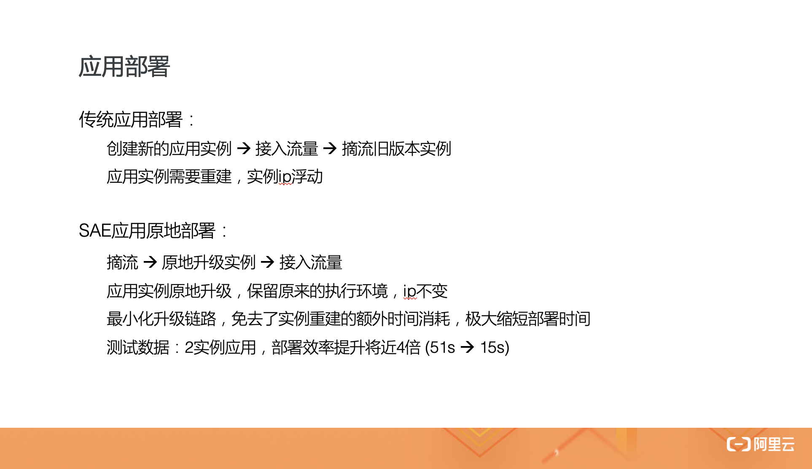
应用重启
最后，简单介绍下我们即将推出的原地重启功能。
重启实例在某些运维场合是必要的操作，说到应用重启，我们希望类似于 linux 系统一样，可以只执行一次 reboot，而不是重建实例。具体的做法是，我们在容器环境下，通过容器引擎 API 执行一次启停操作即可。原地重启相比原地升级，省去了镜像更新和执行环境创建的过程，并且相比 ECS，容器的重启更轻量，能达到秒级。